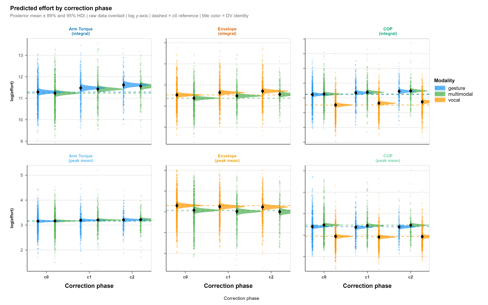
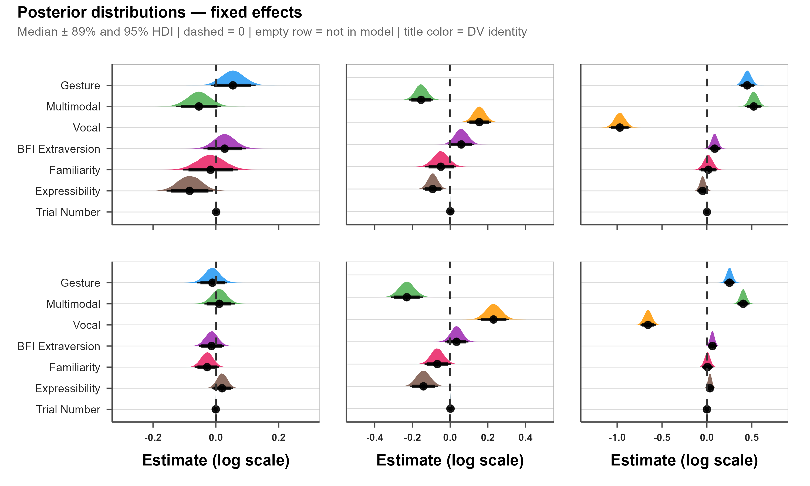
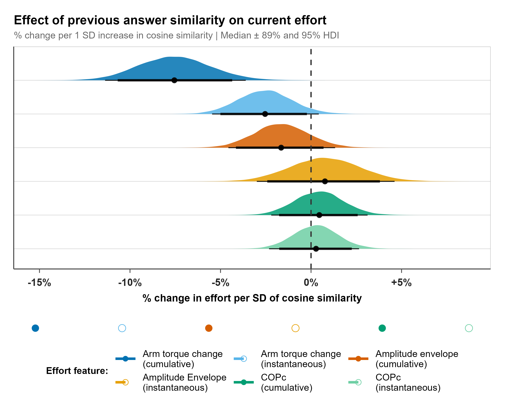
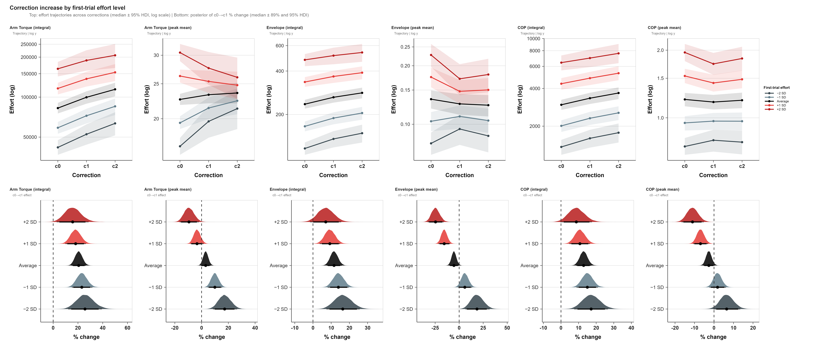
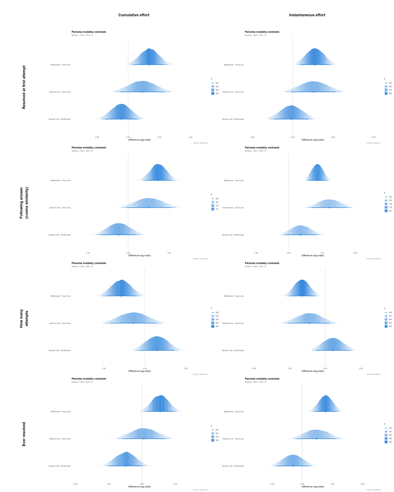
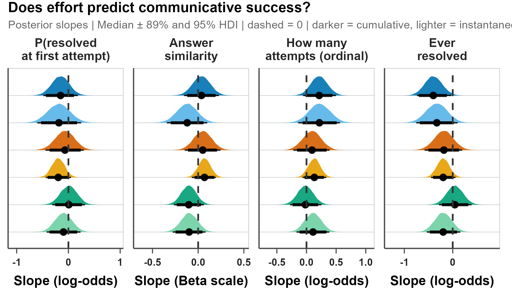

Extended results
3.1 Hypothesis 1
For each of the six dependent variables, we report estimates from Model 3, which offered the best balance between convergence diagnostics (Rhat < 1.01, bulk ESS > 1000) and out-of-sample predictive performance (ELPD-LOO) among Models 1–3. Figure 1 shows Model 3’s posterior predictions of effort across correction phases by modality. Following a model-comparison rather than model-selection logic (McElreath, 2020), we additionally draw on Model 2 for correlations between random intercepts and slopes, and on Model 4 for pre-registered interactions; both are not estimated in Model 3 by design. Estimates of the primary effects remained stable across Models 1–4, indicating that our findings are robust to random effects specification. As expected, Model 0 showed notably larger correction-effect estimates, since with only the primary predictor in the model, correction absorbs variance that Models 1–4 partition into covariates and random slopes. Tables 1–6 summarize the key parameters from all four models across all six dependent variables.
3.1.1 Cumulative effort
Arm torque change (integral)
Cumulative upper-limb effort, measured as an integral of arm net torque change, reliably increased across both corrections. The first correction elicited 20.6% more effort than baseline (95% CrI: [14.5%, 27.1%]), and the second correction elicited a further 15.2% more effort than the first (95% CrI: [8.1%, 22.6%]). In other words, when participants had to repair their original message, they exerted more cumulative upper-limb effort than at baseline and more again on the second attempt, though the second escalation was smaller than the first. Notably, despite the population-level effect, participants did vary in how strongly they responded to the first correction (SD = 0.1 [0.1, 0.2]). All estimates are averaged across modalities and reported at mean values of all continuous predictors.
Additional predictor also showed credible negative effect: concept expressibility. More expressible concepts required less effort: a 1 SD increase in expressibility predicted 8.0% less cumulative arm torque change (95% CrI: [-14.6%, -0.9%]), averaged across modalities and at mean covariate values. Across the range of our stimulus set, this means that producing a low-expressibility concept (2 SD below the mean) required 39.6% more cumulative upper-limb effort than producing a high-expressibility concept (2 SD above the mean).
The fixed effect of modality on cumulative arm torque was positive in direction but not credible in Model 3 (5.6%, 95% CRI [-1.7%, 13.5%]), indicating no reliable average difference in effort between gestural and multimodal communication attempts (gesture vs. multimodal contrast: 11.4%, 95% CrI [-3.4%, 28.7%]). Notably, a simpler model without random slopes for modality (Model 1) did yield a credible positive effect (12.2%, 95% CRI [3.0%, 22.2%]); however, this appears to reflect spurious precision rather than a genuine signal. Once by-participant and by-concept variation in the modality effect was modelled explicitly, the random slope SDs for modality were themselves substantial: 0.2 [0.2, 0.3] across participants and 0.2 [0.1, 0.2] across concepts. This suggests that while there may be a weak average tendency toward greater effort in gesture, the modality effect is highly heterogeneous: it varies considerably depending on who is communicating and what concept is being conveyed.
Substantial variance in cumulative upper-limb effort was distributed across all three grouping levels. Concepts differed most in their baseline effort (SD = 0.4 [0.3, 0.4], accounting for 27.1% total variance), followed by dyads (SD = 0.3 [0.2, 0.4], 19.1%), and participants (SD = 0.2 [0.2, 0.3], 10.0%). Notably, 43.9% of the total variance remained unexplained by the Model’s predictors and grouping structure, suggesting that additional sources of variation in upper-limb effort are not captured by our measured variables.
| term_type | parameter | m0 | m1 | m2 | m3 | m4 |
|---|---|---|---|---|---|---|
| model_info | R2 | 0.026 [0.016, 0.039] | 0.5 [0.463, 0.536] | 0.537 [0.499, 0.573] | 0.533 [0.496, 0.568] | 0.53 [0.495, 0.565] |
| model_info | formula | arm_moment_sum_change_integral ~ 1 + correction | arm_moment_sum_change_integral ~ 1 + correction + modality + BFI_extra + Familiarity + expressibility_z + TrialNumber_c + (1 + correction | pcn_ID) + (1 | SessionID) + (1 + correction | concept) | arm_moment_sum_change_integral ~ 1 + correction + modality + BFI_extra + Familiarity + expressibility_z + TrialNumber_c + (1 + correction + modality + expressibility_z | pcn_ID) + (1 + Familiarity + BFI_extra | SessionID) + (1 + correction + modality | concept) | arm_moment_sum_change_integral ~ 1 + correction + modality + BFI_extra + Familiarity + expressibility_z + TrialNumber_c + (1 + expressibility_z + correction + modality || pcn_ID) + (1 + Familiarity + BFI_extra || SessionID) + (1 + correction + modality || concept) | arm_moment_sum_change_integral ~ 1 + correction + modality + expressibility_z + BFI_extra + Familiarity + TrialNumber_c + correction:modality + correction:expressibility_z + modality:expressibility_z + correction:BFI_extra + correction:Familiarity + (1 + correction + modality + correction:modality || pcn_ID) + (1 + Familiarity + BFI_extra || SessionID) + (1 + correction + modality || concept) |
| model_info | n_obs | 2495 | 2495 | 2495 | 2495 | 2495 |
| fixed | Intercept | 11.27 [11.238, 11.302] * | 11.329 [11.206, 11.454] * | 11.327 [11.203, 11.454] * | 11.326 [11.201, 11.451] * | 11.328 [11.202, 11.453] * |
| fixed | BFI_extra | — | 0.018 [-0.04, 0.077] | 0.028 [-0.037, 0.096] | 0.028 [-0.039, 0.097] | 0.027 [-0.039, 0.097] |
| fixed | Familiarity | — | -0.017 [-0.1, 0.063] | -0.019 [-0.109, 0.068] | -0.017 [-0.104, 0.07] | -0.018 [-0.107, 0.069] |
| fixed | TrialNumber_c | — | 0.001 [0, 0.002] * | 0.001 [0, 0.002] | 0.001 [0, 0.002] | 0.001 [0, 0.002] |
| fixed | correction2M1 | 0.2 [0.134, 0.265] * | 0.188 [0.134, 0.242] * | 0.188 [0.136, 0.24] * | 0.187 [0.135, 0.24] * | 0.189 [0.135, 0.241] * |
| fixed | correction2M1:BFI_extra | — | — | — | — | 0.001 [-0.049, 0.053] |
| fixed | correction2M1:Familiarity | — | — | — | — | 0.001 [-0.051, 0.052] |
| fixed | correction2M1:expressibility_z | — | — | — | — | 0.014 [-0.034, 0.062] |
| fixed | correction2M1:modality1 | — | — | — | — | -0.011 [-0.103, 0.082] |
| fixed | correction3M2 | 0.137 [0.048, 0.228] * | 0.145 [0.081, 0.211] * | 0.139 [0.075, 0.204] * | 0.141 [0.078, 0.204] * | 0.134 [0.066, 0.201] * |
| fixed | correction3M2:BFI_extra | — | — | — | — | -0.003 [-0.063, 0.057] |
| fixed | correction3M2:Familiarity | — | — | — | — | -0.006 [-0.067, 0.055] |
| fixed | correction3M2:expressibility_z | — | — | — | — | -0.02 [-0.085, 0.044] |
| fixed | correction3M2:modality1 | — | — | — | — | 0.017 [-0.106, 0.141] |
| fixed | expressibility_z | — | -0.104 [-0.171, -0.036] * | -0.083 [-0.156, -0.01] * | -0.083 [-0.158, -0.009] * | -0.09 [-0.169, -0.011] * |
| fixed | modality1 | — | 0.057 [0.015, 0.1] * | 0.054 [-0.017, 0.125] | 0.054 [-0.017, 0.126] | 0.054 [-0.022, 0.13] |
| fixed | modality1:expressibility_z | — | — | — | — | 0.016 [-0.046, 0.077] |
| random_sd | sd() | residual__ | 0.72 [0.7, 0.74] | 0.491 [0.476, 0.506] | 0.468 [0.453, 0.483] | 0.468 [0.454, 0.484] | 0.47 [0.455, 0.485] |
| random_sd | sd(BFI_extra) | SessionID | — | — | 0.101 [0.006, 0.215] | 0.098 [0.006, 0.212] | 0.098 [0.006, 0.211] |
| random_sd | sd(Familiarity) | SessionID | — | — | 0.092 [0.005, 0.216] | 0.088 [0.005, 0.208] | 0.09 [0.005, 0.21] |
| random_sd | sd(Intercept) | SessionID | — | 0.308 [0.227, 0.399] | 0.305 [0.214, 0.397] | 0.31 [0.223, 0.401] | 0.31 [0.225, 0.401] |
| random_sd | sd(Intercept) | concept | — | 0.369 [0.312, 0.439] | 0.367 [0.309, 0.434] | 0.37 [0.313, 0.438] | 0.371 [0.314, 0.437] |
| random_sd | sd(Intercept) | pcn_ID | — | 0.256 [0.201, 0.322] | 0.231 [0.161, 0.308] | 0.224 [0.159, 0.293] | 0.223 [0.159, 0.293] |
| random_sd | sd(correction2M1) | concept | — | 0.033 [0.001, 0.088] | 0.035 [0.002, 0.092] | 0.032 [0.001, 0.089] | 0.033 [0.001, 0.091] |
| random_sd | sd(correction2M1) | pcn_ID | — | 0.127 [0.036, 0.195] | 0.127 [0.039, 0.198] | 0.132 [0.053, 0.197] | 0.139 [0.063, 0.202] |
| random_sd | sd(correction2M1:modality1) | pcn_ID | — | — | — | — | 0.066 [0.003, 0.177] |
| random_sd | sd(correction3M2) | concept | — | 0.061 [0.003, 0.146] | 0.065 [0.003, 0.15] | 0.06 [0.003, 0.149] | 0.059 [0.003, 0.15] |
| random_sd | sd(correction3M2) | pcn_ID | — | 0.043 [0.002, 0.118] | 0.043 [0.002, 0.118] | 0.043 [0.002, 0.118] | 0.045 [0.002, 0.123] |
| random_sd | sd(correction3M2:modality1) | pcn_ID | — | — | — | — | 0.09 [0.004, 0.24] |
| random_sd | sd(expressibility_z) | pcn_ID | — | — | 0.05 [0.005, 0.091] | 0.041 [0.002, 0.084] | — |
| random_sd | sd(modality1) | concept | — | — | 0.162 [0.097, 0.228] | 0.162 [0.097, 0.227] | 0.162 [0.097, 0.226] |
| random_sd | sd(modality1) | pcn_ID | — | — | 0.237 [0.183, 0.297] | 0.238 [0.183, 0.296] | 0.238 [0.183, 0.296] |
| random_cor | cor(Familiarity x BFI_extra) | SessionID | — | — | -0.068 [-0.641, 0.553] | — | — |
| random_cor | cor(Intercept x BFI_extra) | SessionID | — | — | 0.190 [-0.377, 0.643] | — | — |
| random_cor | cor(Intercept x Familiarity) | SessionID | — | — | -0.127 [-0.646, 0.448] | — | — |
| random_cor | cor(Intercept x correction2M1) | concept | — | -0.141 [-0.681, 0.495] | -0.134 [-0.644, 0.450] | — | — |
| random_cor | cor(Intercept x correction2M1) | pcn_ID | — | 0.192 [-0.266, 0.583] | 0.139 [-0.316, 0.532] | — | — |
| random_cor | cor(Intercept x correction3M2) | concept | — | -0.197 [-0.687, 0.399] | -0.215 [-0.681, 0.368] | — | — |
| random_cor | cor(Intercept x correction3M2) | pcn_ID | — | -0.044 [-0.618, 0.554] | -0.036 [-0.562, 0.507] | — | — |
| random_cor | cor(Intercept x expressibility_z) | pcn_ID | — | — | -0.293 [-0.708, 0.250] | — | — |
| random_cor | cor(Intercept x modality1) | concept | — | — | -0.062 [-0.374, 0.252] | — | — |
| random_cor | cor(Intercept x modality1) | pcn_ID | — | — | -0.172 [-0.484, 0.170] | — | — |
| random_cor | cor(correction2M1 x correction3M2) | concept | — | 0.007 [-0.584, 0.603] | 0.014 [-0.564, 0.586] | — | — |
| random_cor | cor(correction2M1 x correction3M2) | pcn_ID | — | 0.043 [-0.554, 0.628] | 0.034 [-0.513, 0.573] | — | — |
| random_cor | cor(correction2M1 x expressibility_z) | pcn_ID | — | — | -0.033 [-0.529, 0.461] | — | — |
| random_cor | cor(correction2M1 x modality1) | concept | — | — | 0.125 [-0.474, 0.658] | — | — |
| random_cor | cor(correction2M1 x modality1) | pcn_ID | — | — | 0.011 [-0.380, 0.401] | — | — |
| random_cor | cor(correction3M2 x expressibility_z) | pcn_ID | — | — | 0.027 [-0.528, 0.564] | — | — |
| random_cor | cor(correction3M2 x modality1) | concept | — | — | 0.110 [-0.469, 0.621] | — | — |
| random_cor | cor(correction3M2 x modality1) | pcn_ID | — | — | -0.065 [-0.566, 0.479] | — | — |
| random_cor | cor(modality1 x expressibility_z) | pcn_ID | — | — | 0.228 [-0.253, 0.620] | — | — |
Amplitude envelope (integral)
Cumulative vocal effort, measured as an integral of acoustic amplitude envelope, increased across both corrections. The first correction elicited 11.6% more effort than baseline (95% CrI: [7.4%, 16.0%]), and the second correction elicited a further 7.3% increase over the first (95% CrI: [2.8%, 12.0%]). In other words, when participants had to repair their original message, they produced more effortful vocalizations than at baseline and more effortful again on the second attempt, though the second increase was smaller than the first.
Two predictors also showed credible effects on cumulative vocal effort: concept expressibility and modality. More expressible concepts required less effort: a 1 SD increase in expressibility predicted 8.8% less effort (95% CrI: [-13.5%, -4.0%]), averaged across modalities and at mean covariate values. Across the range of our stimulus set, this translates to 44.6% difference between low-expressibility concepts (2 SD below the mean) and high-expressibility concepts (2 SD above the mean). Second, modality was also meaningful, with participants investing 36.0% more vocal effort in the vocal-only condition than in the multimodal condition (95% CrI: [19.6%, 54.6%]). In other words, when participants could not use gestures alongside vocalizations, they their vocal effort was more pronounced. Familiarity, extraversion, and trial number did not show credible effects.
Model 4 further revealed a credible interaction between modality and concept expressibility β = +0.09 (95% CrI: [+0.02, +0.17]): the negative relationship between expressibility and effort was attenuated in vocal-only trials relative to multimodal trials, suggesting that when participants engage in vocalizations without movement, the effort exerted is more independent of how easy a concept is to express. Additionaly, there was a small but credible interaction between familiarity and correction, with effects in opposite directions across two corrections. Familiar dyads showed a larger increase in vocal effort at the first correction (4.4%, 95% CrI [0.6%, 8.4%]), but a smaller increase at the second correction (-5.0%, 95% CrI [-9.0%, -0.9%]). Importantly, the negative coefficient at the second correction reflects a reduction in the size of the increase rather than a reversal: familiar dyads still produce more vocal effort at the second correction than at the first, just less so than non-familiar dyads. This pattern suggests that familiar dyads invest more vocal effort in the first correction and tone down the effort at the second correction, possibly because the first increase payed off as a better guessing score that does not necessitate so strong escalation.
The largest contribution to variance in cumulative vocal effort came from participants, who differed substantially in their baseline vocal effort (SD = 0.3 [0.3, 0.4], 26.4% of total variance), and concepts (SD = 0.3 [0.2, 0.3], 21.1%). Dyad-level variance was both smaller and more uncertain (SD = 0.2 [0.0, 0.3], 9.2%). Random slopes indicated that participants varied in their sensitivity to expressibility (SD = 0.1 [0.1, 0.1]) and to modality (SD = 0.2 [0.2, 0.3]), and concepts varied in their sensitivity to modality (SD = 0.2 [0.1, 0.2]). Importantly, Model 2 revealed a credible negative correlation between participant-level baseline effort and expressibility sensitivity (r = -0.3, 95% CrI [-0.5, -0.0]): participants who exerted more vocal effort overall showed smaller modulation of effort by concept expressibility. No other correlations between random intercepts and slopes reached credibility. Taken together, however, 43.2% of the total variance in cumulative vocal effort remains unexplained by the model’s predictors and grouping structure, suggesting that further sources of variation are not captured by the variables.
| term_type | parameter | m0 | m1 | m2 | m3 | m4 |
|---|---|---|---|---|---|---|
| model_info | R2 | 0.017 [0.011, 0.025] | 0.515 [0.481, 0.549] | 0.573 [0.541, 0.604] | 0.569 [0.536, 0.6] | 0.551 [0.518, 0.582] |
| model_info | formula | envelope_norm_integral ~ 1 + correction | envelope_norm_integral ~ 1 + correction + modality + BFI_extra + Familiarity + expressibility_z + TrialNumber_c + (1 + correction | pcn_ID) + (1 | SessionID) + (1 + correction | concept) | envelope_norm_integral ~ 1 + correction + modality + BFI_extra + Familiarity + expressibility_z + TrialNumber_c + (1 + correction + modality + expressibility_z | pcn_ID) + (1 + BFI_extra + Familiarity | SessionID) + (1 + correction + modality | concept) | envelope_norm_integral ~ 1 + correction + modality + BFI_extra + Familiarity + expressibility_z + TrialNumber_c + (1 + correction + modality + expressibility_z || pcn_ID) + (1 + Familiarity + BFI_extra || SessionID) + (1 + correction + modality || concept) | envelope_norm_integral ~ 1 + correction + modality + expressibility_z + BFI_extra + Familiarity + TrialNumber_c + correction:modality + correction:expressibility_z + modality:expressibility_z + correction:BFI_extra + correction:Familiarity + (1 + correction + modality + correction:modality || pcn_ID) + (1 + Familiarity + BFI_extra || SessionID) + (1 + correction + modality || concept) |
| model_info | n_obs | 3184 | 3184 | 3184 | 3184 | 3184 |
| fixed | Intercept | 5.483 [5.459, 5.507] * | 5.472 [5.37, 5.577] * | 5.467 [5.364, 5.569] * | 5.466 [5.361, 5.569] * | 5.476 [5.375, 5.579] * |
| fixed | BFI_extra | — | 0.056 [-0.011, 0.122] | 0.066 [-0.001, 0.134] | 0.059 [-0.011, 0.13] | 0.056 [-0.015, 0.128] |
| fixed | Familiarity | — | -0.055 [-0.133, 0.022] | -0.05 [-0.134, 0.033] | -0.049 [-0.132, 0.034] | -0.05 [-0.133, 0.033] |
| fixed | TrialNumber_c | — | 0.001 [0.001, 0.002] * | 0.001 [0, 0.002] * | 0.001 [0, 0.002] * | 0.001 [0, 0.002] * |
| fixed | correction2M1 | 0.165 [0.113, 0.218] * | 0.118 [0.077, 0.158] * | 0.111 [0.072, 0.149] * | 0.11 [0.071, 0.148] * | 0.106 [0.066, 0.146] * |
| fixed | correction2M1:BFI_extra | — | — | — | — | -0.007 [-0.045, 0.031] |
| fixed | correction2M1:Familiarity | — | — | — | — | 0.043 [0.006, 0.08] * |
| fixed | correction2M1:expressibility_z | — | — | — | — | 0.004 [-0.04, 0.048] |
| fixed | correction2M1:modality1 | — | — | — | — | 0.017 [-0.056, 0.09] |
| fixed | correction3M2 | 0.095 [0.032, 0.159] * | 0.066 [0.021, 0.11] * | 0.072 [0.029, 0.115] * | 0.07 [0.028, 0.113] * | 0.09 [0.042, 0.138] * |
| fixed | correction3M2:BFI_extra | — | — | — | — | -0.001 [-0.043, 0.041] |
| fixed | correction3M2:Familiarity | — | — | — | — | -0.052 [-0.095, -0.009] * |
| fixed | correction3M2:expressibility_z | — | — | — | — | 0.04 [-0.013, 0.092] |
| fixed | correction3M2:modality1 | — | — | — | — | -0.061 [-0.152, 0.03] |
| fixed | expressibility_z | — | -0.102 [-0.138, -0.067] * | -0.098 [-0.152, -0.045] * | -0.092 [-0.145, -0.041] * | -0.117 [-0.169, -0.064] * |
| fixed | modality1 | — | 0.145 [0.111, 0.179] * | 0.151 [0.089, 0.214] * | 0.154 [0.09, 0.218] * | 0.14 [0.074, 0.205] * |
| fixed | modality1:expressibility_z | — | — | — | — | 0.092 [0.016, 0.168] * |
| random_sd | sd() | residual__ | 0.656 [0.64, 0.672] | 0.435 [0.423, 0.446] | 0.407 [0.396, 0.418] | 0.407 [0.396, 0.418] | 0.415 [0.404, 0.426] |
| random_sd | sd(BFI_extra) | SessionID | — | — | 0.053 [0.002, 0.151] | 0.061 [0.002, 0.165] | 0.062 [0.003, 0.169] |
| random_sd | sd(Familiarity) | SessionID | — | — | 0.112 [0.009, 0.226] | 0.1 [0.005, 0.22] | 0.099 [0.006, 0.22] |
| random_sd | sd(Intercept) | SessionID | — | 0.212 [0.07, 0.316] | 0.17 [0.023, 0.286] | 0.18 [0.024, 0.3] | 0.183 [0.029, 0.302] |
| random_sd | sd(Intercept) | concept | — | 0.286 [0.242, 0.34] | 0.285 [0.241, 0.337] | 0.286 [0.243, 0.338] | 0.283 [0.241, 0.335] |
| random_sd | sd(Intercept) | pcn_ID | — | 0.331 [0.27, 0.405] | 0.326 [0.264, 0.395] | 0.32 [0.26, 0.391] | 0.322 [0.261, 0.393] |
| random_sd | sd(correction2M1) | concept | — | 0.037 [0.002, 0.095] | 0.039 [0.002, 0.094] | 0.041 [0.002, 0.094] | 0.04 [0.002, 0.095] |
| random_sd | sd(correction2M1) | pcn_ID | — | 0.083 [0.012, 0.141] | 0.061 [0.006, 0.116] | 0.058 [0.004, 0.118] | 0.067 [0.005, 0.127] |
| random_sd | sd(correction2M1:modality1) | pcn_ID | — | — | — | — | 0.046 [0.002, 0.129] |
| random_sd | sd(correction3M2) | concept | — | 0.033 [0.001, 0.083] | 0.035 [0.002, 0.086] | 0.029 [0.001, 0.079] | 0.029 [0.001, 0.079] |
| random_sd | sd(correction3M2) | pcn_ID | — | 0.047 [0.002, 0.114] | 0.049 [0.002, 0.113] | 0.052 [0.002, 0.119] | 0.05 [0.002, 0.119] |
| random_sd | sd(correction3M2:modality1) | pcn_ID | — | — | — | — | 0.058 [0.002, 0.158] |
| random_sd | sd(expressibility_z) | pcn_ID | — | — | 0.114 [0.086, 0.144] | 0.115 [0.088, 0.144] | — |
| random_sd | sd(modality1) | concept | — | — | 0.168 [0.122, 0.22] | 0.17 [0.125, 0.221] | 0.164 [0.117, 0.215] |
| random_sd | sd(modality1) | pcn_ID | — | — | 0.208 [0.161, 0.258] | 0.211 [0.166, 0.261] | 0.217 [0.171, 0.267] |
| random_cor | cor(BFI_extra x Familiarity) | SessionID | — | — | 0.023 [-0.583, 0.627] | — | — |
| random_cor | cor(Intercept x BFI_extra) | SessionID | — | — | 0.065 [-0.550, 0.639] | — | — |
| random_cor | cor(Intercept x Familiarity) | SessionID | — | — | -0.262 [-0.742, 0.366] | — | — |
| random_cor | cor(Intercept x correction2M1) | concept | — | 0.031 [-0.502, 0.558] | -0.017 [-0.519, 0.495] | — | — |
| random_cor | cor(Intercept x correction2M1) | pcn_ID | — | 0.208 [-0.242, 0.586] | 0.058 [-0.399, 0.494] | — | — |
| random_cor | cor(Intercept x correction3M2) | concept | — | -0.188 [-0.701, 0.444] | -0.235 [-0.703, 0.371] | — | — |
| random_cor | cor(Intercept x correction3M2) | pcn_ID | — | 0.040 [-0.518, 0.560] | -0.044 [-0.526, 0.470] | — | — |
| random_cor | cor(Intercept x expressibility_z) | pcn_ID | — | — | -0.302 [-0.544, -0.036] * | — | — |
| random_cor | cor(Intercept x modality1) | concept | — | — | 0.157 [-0.128, 0.432] | — | — |
| random_cor | cor(Intercept x modality1) | pcn_ID | — | — | 0.129 [-0.137, 0.388] | — | — |
| random_cor | cor(correction2M1 x correction3M2) | concept | — | -0.034 [-0.621, 0.578] | -0.031 [-0.594, 0.554] | — | — |
| random_cor | cor(correction2M1 x correction3M2) | pcn_ID | — | 0.144 [-0.474, 0.676] | 0.099 [-0.462, 0.619] | — | — |
| random_cor | cor(correction2M1 x expressibility_z) | pcn_ID | — | — | -0.123 [-0.559, 0.352] | — | — |
| random_cor | cor(correction2M1 x modality1) | concept | — | — | 0.112 [-0.446, 0.612] | — | — |
| random_cor | cor(correction2M1 x modality1) | pcn_ID | — | — | 0.280 [-0.242, 0.687] | — | — |
| random_cor | cor(correction3M2 x expressibility_z) | pcn_ID | — | — | 0.013 [-0.500, 0.505] | — | — |
| random_cor | cor(correction3M2 x modality1) | concept | — | — | -0.000 [-0.551, 0.542] | — | — |
| random_cor | cor(correction3M2 x modality1) | pcn_ID | — | — | 0.204 [-0.363, 0.666] | — | — |
| random_cor | cor(modality1 x expressibility_z) | pcn_ID | — | — | 0.003 [-0.288, 0.292] | — | — |
Change in center of pressure (integral)
Cumulative postural effort, measured as the integral of center of pressure change (COPc) across the trial, increased reliably across both corrections. The first correction elicited 12.9% more effort than baseline (95% CrI: [8.5%, 17.4%]), and the second correction elicited a further 10.0% increase over the first (95% CrI: [5.0%, 15.2%]). Similar to upper-limb and vocal effort, the magnitude of the increase slowed down across two corrections, indicating that postural effort continued to increase across both correction attempts but at slightly slower rate at the second attempt. All estimates are averaged across modalities and reported at mean values of all continuous predictors.
Two further predictors showed reliable effects on cumulative postural effort: extraversion and modality. More extroverted participants engaged in more cumulative postural effort: a 1-SD increase in extraversion predicted 9.1% more COPc (95% CrI: [1.5%, 17.0%]). Across the range of our sample, this means that a highly introverted person (2 SD below the mean) engaged in 29.3% less cumulative postural effort than a highly extroverted person (2 SD above the mean). Modality had a particularly strong effect: direct contrasts confirm that conditions involving bodily movement elicited substantially more postural effort than the vocal-only condition (gesture-only vs. vocal-only: 313.3% more, 95% CrI: [212.8%, 444.2%]; multimodal vs. vocal-only: 344.3%, 95% CrI: [235.4%, 486.9%]), while the gesture-only and multimodal conditions did not differ credibly from each other. This pattern reflects the simple fact that arm movements increase demands on posture-related effort. Familiarity and trial number did not show credible effects.
Model 4 additionally showed a small but credible negative interaction between familiarity and the second correction (-5.0% relative to the average correction effect, 95% CrI: [-9.3%, -0.6%]). As with the envelope finding, the negative coefficient reflects the reduction in the size of the increase rather than a reversal: familiar dyads still showed more cumulative postural effort in the second correction compared to the first correction, but their escalation was attenuated relative to non-familiar dyads. This pattern echoes the vocal-effort interaction in suggesting that familiar dyads may reach a plateau sooner across correction attempts.
The contribution to variance in cumulative postural effort was equally distributed between concepts (SD = 0.4 [0.3, 0.4], 23.0% of total variance), dyads (SD = 0.3 [0.2, 0.4], 18.4%), and participants (SD = 0.3 [0.2, 0.4], 15.4%). Random slopes indicated that participants varied substantially in their sensitivity to modality (gesture-only: SD = 0.3 [0.2, 0.4]; vocal: SD = 0.5 [0.4, 0.5]; multimodal: SD = 0.4 [0.3, 0.4]), and concepts varied to a smaller extent (gesture-only: SD = 0.3 [0.2, 0.3]; vocal-only: SD = 0.3 [0.3, 0.4]; multimodal: SD = 0.2 [0.1, 0.3]). Importantly, Model 2 revealed credible positive correlations between concept-level baseline effort and modality sensitivity (gesture-only: r = 0.5, 95% CrI: [0.2, 0.7]; vocal-only: r = -0.6, 95% CrI: [-0.7, -0.5]; multimodal: r = 0.3, 95% CrI: [0.0, 0.6]), indicating that concepts associated with more postural effort overall also showed larger modality-driven differences in postural effort. No other correlations between random intercepts and slopes reached credibility. Finally, 43.1% of the total variance in cumulative postural effort remained unexplained by the model’s predictors and grouping structure, suggesting that further sources of variation are not captured by the variables.
| term_type | parameter | m0 | m1 | m2 | m3 | m4 |
|---|---|---|---|---|---|---|
| model_info | R2 | 0.001 [0, 0.003] | 0.411 [0.374, 0.45] | 0.526 [0.477, 0.577] | 0.524 [0.475, 0.574] | 0.517 [0.47, 0.564] |
| model_info | formula | COPc_integral ~ 1 + correction | COPc_integral ~ 1 + correction + modality + expressibility_z + BFI_extra + Familiarity + TrialNumber_c + (1 + correction | pcn_ID) + (1 | SessionID) + (1 + correction | concept) | COPc_integral ~ 1 + correction + modality + expressibility_z + BFI_extra + Familiarity + TrialNumber_c + (1 + correction + modality + expressibility_z | pcn_ID) + (1 + Familiarity + BFI_extra | SessionID) + (1 + correction + modality | concept) | COPc_integral ~ 1 + correction + modality + expressibility_z + BFI_extra + Familiarity + TrialNumber_c + (1 + correction + modality + expressibility_z || pcn_ID) + (1 + Familiarity + BFI_extra || SessionID) + (1 + correction + modality || concept) | COPc_integral ~ 1 + correction + modality + expressibility_z + BFI_extra + Familiarity + TrialNumber_c + correction:modality + correction:expressibility_z + modality:expressibility_z + correction:BFI_extra + correction:Familiarity + (1 + correction + modality + correction:modality || pcn_ID) + (1 + Familiarity + BFI_extra || SessionID) + (1 + correction + modality || concept) |
| model_info | n_obs | 4428 | 4428 | 4428 | 4428 | 4428 |
| fixed | Intercept | 7.87 [7.843, 7.897] * | 7.993 [7.865, 8.124] * | 7.997 [7.868, 8.127] * | 7.992 [7.86, 8.128] * | 7.997 [7.865, 8.13] * |
| fixed | BFI_extra | — | 0.078 [0.009, 0.147] * | 0.078 [0.007, 0.151] * | 0.087 [0.015, 0.157] * | 0.084 [0.011, 0.157] * |
| fixed | Familiarity | — | 0.011 [-0.082, 0.104] | 0.019 [-0.082, 0.119] | 0.015 [-0.085, 0.114] | 0.011 [-0.089, 0.112] |
| fixed | TrialNumber_c | — | 0.001 [0, 0.002] * | 0.001 [0, 0.002] * | 0.001 [0, 0.002] * | 0.001 [0, 0.002] * |
| fixed | correction2M1 | 0.082 [0.023, 0.142] * | 0.13 [0.087, 0.174] * | 0.121 [0.081, 0.16] * | 0.121 [0.082, 0.16] * | 0.124 [0.083, 0.165] * |
| fixed | correction2M1:BFI_extra | — | — | — | — | -0.01 [-0.047, 0.027] |
| fixed | correction2M1:Familiarity | — | — | — | — | 0.014 [-0.023, 0.052] |
| fixed | correction2M1:expressibility_z | — | — | — | — | 0.006 [-0.037, 0.051] |
| fixed | correction2M1:modality1 | — | — | — | — | 0.042 [-0.066, 0.151] |
| fixed | correction2M1:modality2 | — | — | — | — | 0.011 [-0.098, 0.12] |
| fixed | correction3M2 | 0.014 [-0.059, 0.088] | 0.093 [0.041, 0.146] * | 0.095 [0.048, 0.142] * | 0.096 [0.049, 0.142] * | 0.101 [0.05, 0.153] * |
| fixed | correction3M2:BFI_extra | — | — | — | — | 0.011 [-0.035, 0.057] |
| fixed | correction3M2:Familiarity | — | — | — | — | -0.051 [-0.098, -0.006] * |
| fixed | correction3M2:expressibility_z | — | — | — | — | 0.019 [-0.035, 0.074] |
| fixed | correction3M2:modality1 | — | — | — | — | 0.027 [-0.113, 0.167] |
| fixed | correction3M2:modality2 | — | — | — | — | -0.042 [-0.184, 0.1] |
| fixed | expressibility_z | — | -0.025 [-0.058, 0.008] | -0.084 [-0.14, -0.029] * | -0.047 [-0.107, 0.014] | -0.053 [-0.117, 0.01] |
| fixed | modality1 | — | 0.452 [0.401, 0.503] * | 0.452 [0.363, 0.542] * | 0.449 [0.357, 0.54] * | 0.476 [0.38, 0.573] * |
| fixed | modality1:expressibility_z | — | — | — | — | -0.068 [-0.166, 0.027] |
| fixed | modality2 | — | 0.528 [0.477, 0.578] * | 0.517 [0.423, 0.61] * | 0.521 [0.427, 0.615] * | 0.518 [0.42, 0.614] * |
| fixed | modality2:expressibility_z | — | — | — | — | -0.015 [-0.115, 0.088] |
| random_sd | sd() | residual__ | 0.874 [0.856, 0.892] | 0.554 [0.542, 0.566] | 0.5 [0.488, 0.511] | 0.5 [0.488, 0.511] | 0.504 [0.493, 0.516] |
| random_sd | sd(BFI_extra) | SessionID | — | — | 0.06 [0.002, 0.168] | 0.059 [0.002, 0.163] | 0.06 [0.003, 0.165] |
| random_sd | sd(Familiarity) | SessionID | — | — | 0.131 [0.007, 0.293] | 0.127 [0.007, 0.281] | 0.128 [0.008, 0.286] |
| random_sd | sd(Intercept) | SessionID | — | 0.348 [0.252, 0.451] | 0.311 [0.18, 0.43] | 0.325 [0.213, 0.436] | 0.326 [0.211, 0.438] |
| random_sd | sd(Intercept) | concept | — | 0.338 [0.287, 0.399] | 0.354 [0.303, 0.414] | 0.367 [0.312, 0.432] | 0.372 [0.317, 0.438] |
| random_sd | sd(Intercept) | pcn_ID | — | 0.32 [0.262, 0.391] | 0.315 [0.249, 0.395] | 0.301 [0.241, 0.373] | 0.3 [0.24, 0.374] |
| random_sd | sd(correction2M1) | concept | — | 0.064 [0.008, 0.116] | 0.051 [0.004, 0.105] | 0.039 [0.002, 0.095] | 0.039 [0.002, 0.096] |
| random_sd | sd(correction2M1) | pcn_ID | — | 0.063 [0.004, 0.129] | 0.049 [0.002, 0.11] | 0.055 [0.003, 0.116] | 0.062 [0.004, 0.125] |
| random_sd | sd(correction2M1:modality1) | pcn_ID | — | — | — | — | 0.065 [0.003, 0.172] |
| random_sd | sd(correction2M1:modality2) | pcn_ID | — | — | — | — | 0.052 [0.002, 0.147] |
| random_sd | sd(correction3M2) | concept | — | 0.054 [0.003, 0.119] | 0.04 [0.002, 0.095] | 0.033 [0.001, 0.088] | 0.034 [0.001, 0.092] |
| random_sd | sd(correction3M2) | pcn_ID | — | 0.089 [0.008, 0.169] | 0.075 [0.008, 0.143] | 0.067 [0.005, 0.141] | 0.069 [0.004, 0.145] |
| random_sd | sd(correction3M2:modality1) | pcn_ID | — | — | — | — | 0.069 [0.003, 0.189] |
| random_sd | sd(correction3M2:modality2) | pcn_ID | — | — | — | — | 0.072 [0.003, 0.198] |
| random_sd | sd(expressibility_z) | pcn_ID | — | — | 0.091 [0.06, 0.123] | 0.091 [0.059, 0.121] | — |
| random_sd | sd(modality1) | concept | — | — | 0.237 [0.169, 0.312] | 0.252 [0.184, 0.327] | 0.252 [0.186, 0.324] |
| random_sd | sd(modality1) | pcn_ID | — | — | 0.296 [0.228, 0.37] | 0.305 [0.242, 0.376] | 0.308 [0.245, 0.377] |
| random_sd | sd(modality2) | concept | — | — | 0.221 [0.149, 0.297] | 0.215 [0.145, 0.288] | 0.2 [0.13, 0.275] |
| random_sd | sd(modality2) | pcn_ID | — | — | 0.348 [0.281, 0.421] | 0.358 [0.293, 0.429] | 0.354 [0.291, 0.426] |
| random_cor | cor(Familiarity x BFI_extra) | SessionID | — | — | -0.036 [-0.616, 0.580] | — | — |
| random_cor | cor(Intercept x BFI_extra) | SessionID | — | — | 0.121 [-0.493, 0.652] | — | — |
| random_cor | cor(Intercept x Familiarity) | SessionID | — | — | 0.006 [-0.540, 0.527] | — | — |
| random_cor | cor(Intercept x correction2M1) | concept | — | -0.472 [-0.821, 0.081] | -0.288 [-0.693, 0.243] | — | — |
| random_cor | cor(Intercept x correction2M1) | pcn_ID | — | 0.145 [-0.430, 0.627] | 0.015 [-0.479, 0.504] | — | — |
| random_cor | cor(Intercept x correction3M2) | concept | — | -0.378 [-0.810, 0.306] | -0.230 [-0.701, 0.366] | — | — |
| random_cor | cor(Intercept x correction3M2) | pcn_ID | — | 0.183 [-0.336, 0.616] | 0.061 [-0.401, 0.498] | — | — |
| random_cor | cor(Intercept x expressibility_z) | pcn_ID | — | — | -0.234 [-0.532, 0.100] | — | — |
| random_cor | cor(Intercept x modality1) | concept | — | — | 0.488 [0.224, 0.717] * | — | — |
| random_cor | cor(Intercept x modality1) | pcn_ID | — | — | 0.040 [-0.236, 0.320] | — | — |
| random_cor | cor(Intercept x modality2) | concept | — | — | 0.320 [0.039, 0.568] * | — | — |
| random_cor | cor(Intercept x modality2) | pcn_ID | — | — | -0.085 [-0.360, 0.195] | — | — |
| random_cor | cor(correction2M1 x correction3M2) | concept | — | 0.118 [-0.463, 0.650] | 0.013 [-0.526, 0.562] | — | — |
| random_cor | cor(correction2M1 x correction3M2) | pcn_ID | — | 0.159 [-0.453, 0.687] | 0.048 [-0.480, 0.561] | — | — |
| random_cor | cor(correction2M1 x expressibility_z) | pcn_ID | — | — | -0.034 [-0.528, 0.473] | — | — |
| random_cor | cor(correction2M1 x modality1) | concept | — | — | 0.051 [-0.464, 0.531] | — | — |
| random_cor | cor(correction2M1 x modality1) | pcn_ID | — | — | 0.081 [-0.423, 0.544] | — | — |
| random_cor | cor(correction2M1 x modality2) | concept | — | — | -0.137 [-0.596, 0.381] | — | — |
| random_cor | cor(correction2M1 x modality2) | pcn_ID | — | — | -0.150 [-0.592, 0.371] | — | — |
| random_cor | cor(correction3M2 x expressibility_z) | pcn_ID | — | — | -0.116 [-0.563, 0.364] | — | — |
| random_cor | cor(correction3M2 x modality1) | concept | — | — | -0.166 [-0.657, 0.409] | — | — |
| random_cor | cor(correction3M2 x modality1) | pcn_ID | — | — | -0.172 [-0.596, 0.314] | — | — |
| random_cor | cor(correction3M2 x modality2) | concept | — | — | -0.166 [-0.648, 0.399] | — | — |
| random_cor | cor(correction3M2 x modality2) | pcn_ID | — | — | -0.265 [-0.661, 0.234] | — | — |
| random_cor | cor(modality1 x expressibility_z) | pcn_ID | — | — | 0.075 [-0.248, 0.390] | — | — |
| random_cor | cor(modality1 x modality2) | concept | — | — | 0.091 [-0.283, 0.478] | — | — |
| random_cor | cor(modality1 x modality2) | pcn_ID | — | — | 0.134 [-0.143, 0.421] | — | — |
| random_cor | cor(modality2 x expressibility_z) | pcn_ID | — | — | -0.138 [-0.434, 0.174] | — | — |
Taken together, the three cumulative measures consistently support H1 for cumulative effort: arm torque, amplitude envelope, and COP change all increased reliably from baseline to the first correction (between 11.6% and 20.6%) and from the first to the second correction (between 7.3% and 15.2%). The increase was largest for upper-limb effort, indicating that arms are the most flexibly recruited modality during repair. The consistency of these increases across three independent measures of bodily effort indicates that repair imposes a substantive physical cost on interlocutors who are responsible for resolving misunderstanding (in this case performers), supporting the hypothesis that misunderstanding recruit more physical effort investment.
3.1.2 Instantenous effort
Arm torque change (peak mean)
None of the predictors showed reliable effects on instantaneous upper-limb effort. Neither the correction phase nor any of the covariates (modality, expressibility, familiarity, extraversion, trial number) produced effects whose 95% credible intervals excluded zero. The trend for first correction is positive but includes zero (β = 3.8%, 95% CrI: [-0.0%, 7.7%]). This null finding is itself informative: while cumulative upper-limb effort increased substantially across corrections (Section 3.1.1 above), the local magnitude of torque change per movement event remained stable. The positive trend might point to opportunistic use of magnitude in cases where magnitude is relevant for resolving misunderstanding.
Variance was distributed between participants (SD = 0.1 [0.1, 0.2], 8.4% of total variance) and concepts (SD = 0.1 [0.1, 0.2], 10.9%), though to a lesser extent than for cumulative measures. Participants also varied in modality sensitivity (SD = 0.2 [0.1, 0.2]), but baseline effort did not correlate credibly with modality sensitivity in Model 2. Crucially, 75.7% of the total variance in instantaneous upper-limb effort remains unexplained by the model’s predictors and grouping structure, the largest residual share of any measure we examined.
| term_type | parameter | m0 | m1 | m2 | m3 | m4 |
|---|---|---|---|---|---|---|
| model_info | R2 | 0.001 [0, 0.005] | 0.213 [0.185, 0.242] | 0.252 [0.221, 0.283] | 0.253 [0.222, 0.284] | 0.255 [0.225, 0.286] |
| model_info | formula | arm_moment_sum_change_peak_mean ~ 1 + correction | arm_moment_sum_change_peak_mean ~ 1 + correction + modality + BFI_extra + Familiarity + expressibility_z + TrialNumber_c + (1 + correction | pcn_ID) + (1 | SessionID) + (1 + correction | concept) | arm_moment_sum_change_peak_mean ~ 1 + correction + modality + BFI_extra + Familiarity + expressibility_z + TrialNumber_c + (1 + correction + modality + expressibility_z | pcn_ID) + (1 + BFI_extra + Familiarity | SessionID) + (1 + correction + modality | concept) | arm_moment_sum_change_peak_mean ~ 1 + correction + modality + BFI_extra + Familiarity + expressibility_z + TrialNumber_c + (1 + correction + modality + expressibility_z || pcn_ID) + (1 + BFI_extra + Familiarity || SessionID) + (1 + correction + modality || concept) | arm_moment_sum_change_peak_mean ~ 1 + correction + modality + expressibility_z + BFI_extra + Familiarity + TrialNumber_c + correction:modality + correction:expressibility_z + modality:expressibility_z + correction:BFI_extra + correction:Familiarity + (1 + correction + modality + correction:modality || pcn_ID) + (1 + Familiarity + BFI_extra || SessionID) + (1 + correction + modality || concept) |
| model_info | n_obs | 2495 | 2495 | 2495 | 2495 | 2495 |
| fixed | Intercept | 3.106 [3.087, 3.125] * | 3.125 [3.074, 3.175] * | 3.126 [3.076, 3.176] * | 3.126 [3.076, 3.176] * | 3.13 [3.078, 3.181] * |
| fixed | BFI_extra | — | -0.017 [-0.05, 0.017] | -0.012 [-0.053, 0.029] | -0.014 [-0.053, 0.027] | -0.012 [-0.053, 0.029] |
| fixed | Familiarity | — | -0.032 [-0.07, 0.006] | -0.025 [-0.064, 0.013] | -0.028 [-0.067, 0.01] | -0.032 [-0.072, 0.007] |
| fixed | TrialNumber_c | — | 0 [-0.001, 0] | 0 [-0.001, 0] | 0 [-0.001, 0] | 0 [-0.001, 0] |
| fixed | correction2M1 | 0.019 [-0.02, 0.058] | 0.035 [-0.002, 0.073] | 0.036 [-0.001, 0.073] | 0.037 [0, 0.074] | 0.037 [-0.001, 0.075] |
| fixed | correction2M1:BFI_extra | — | — | — | — | 0.012 [-0.024, 0.048] |
| fixed | correction2M1:Familiarity | — | — | — | — | -0.019 [-0.055, 0.018] |
| fixed | correction2M1:expressibility_z | — | — | — | — | 0.008 [-0.03, 0.045] |
| fixed | correction2M1:modality1 | — | — | — | — | -0.048 [-0.119, 0.023] |
| fixed | correction3M2 | 0.013 [-0.039, 0.067] | 0.02 [-0.028, 0.069] | 0.016 [-0.032, 0.064] | 0.016 [-0.033, 0.065] | 0.022 [-0.03, 0.074] |
| fixed | correction3M2:BFI_extra | — | — | — | — | -0.011 [-0.058, 0.035] |
| fixed | correction3M2:Familiarity | — | — | — | — | 0.002 [-0.044, 0.049] |
| fixed | correction3M2:expressibility_z | — | — | — | — | 0.016 [-0.035, 0.065] |
| fixed | correction3M2:modality1 | — | — | — | — | 0.081 [-0.014, 0.173] |
| fixed | expressibility_z | — | 0.018 [-0.015, 0.05] | 0.019 [-0.016, 0.053] | 0.02 [-0.014, 0.054] | 0.021 [-0.014, 0.057] |
| fixed | modality1 | — | -0.013 [-0.045, 0.018] | -0.011 [-0.057, 0.036] | -0.011 [-0.059, 0.038] | -0.008 [-0.059, 0.043] |
| fixed | modality1:expressibility_z | — | — | — | — | 0.018 [-0.021, 0.057] |
| random_sd | sd() | residual__ | 0.431 [0.42, 0.443] | 0.373 [0.363, 0.385] | 0.362 [0.351, 0.373] | 0.362 [0.351, 0.374] | 0.362 [0.351, 0.374] |
| random_sd | sd(BFI_extra) | SessionID | — | — | 0.089 [0.013, 0.154] | 0.082 [0.011, 0.145] | 0.082 [0.011, 0.145] |
| random_sd | sd(Familiarity) | SessionID | — | — | 0.031 [0.001, 0.085] | 0.032 [0.001, 0.09] | 0.032 [0.001, 0.088] |
| random_sd | sd(Intercept) | SessionID | — | 0.094 [0.02, 0.148] | 0.086 [0.012, 0.143] | 0.089 [0.016, 0.144] | 0.091 [0.019, 0.145] |
| random_sd | sd(Intercept) | concept | — | 0.138 [0.11, 0.171] | 0.137 [0.11, 0.169] | 0.138 [0.111, 0.169] | 0.138 [0.111, 0.169] |
| random_sd | sd(Intercept) | pcn_ID | — | 0.143 [0.108, 0.185] | 0.119 [0.073, 0.167] | 0.121 [0.074, 0.169] | 0.12 [0.072, 0.167] |
| random_sd | sd(correction2M1) | concept | — | 0.031 [0.001, 0.08] | 0.031 [0.001, 0.08] | 0.031 [0.001, 0.079] | 0.033 [0.001, 0.084] |
| random_sd | sd(correction2M1) | pcn_ID | — | 0.047 [0.003, 0.104] | 0.053 [0.003, 0.109] | 0.055 [0.004, 0.111] | 0.058 [0.004, 0.115] |
| random_sd | sd(correction2M1:modality1) | pcn_ID | — | — | — | — | 0.057 [0.002, 0.147] |
| random_sd | sd(correction3M2) | concept | — | 0.041 [0.002, 0.107] | 0.043 [0.002, 0.109] | 0.045 [0.002, 0.11] | 0.043 [0.002, 0.107] |
| random_sd | sd(correction3M2) | pcn_ID | — | 0.049 [0.002, 0.119] | 0.042 [0.002, 0.107] | 0.044 [0.002, 0.111] | 0.047 [0.002, 0.117] |
| random_sd | sd(correction3M2:modality1) | pcn_ID | — | — | — | — | 0.065 [0.003, 0.175] |
| random_sd | sd(expressibility_z) | pcn_ID | — | — | 0.032 [0.003, 0.062] | 0.024 [0.001, 0.056] | — |
| random_sd | sd(modality1) | concept | — | — | 0.07 [0.007, 0.13] | 0.074 [0.009, 0.13] | 0.074 [0.01, 0.13] |
| random_sd | sd(modality1) | pcn_ID | — | — | 0.16 [0.118, 0.204] | 0.162 [0.12, 0.206] | 0.162 [0.12, 0.206] |
| random_cor | cor(BFI_extra x Familiarity) | SessionID | — | — | -0.067 [-0.639, 0.555] | — | — |
| random_cor | cor(Intercept x BFI_extra) | SessionID | — | — | 0.075 [-0.444, 0.554] | — | — |
| random_cor | cor(Intercept x Familiarity) | SessionID | — | — | 0.057 [-0.547, 0.632] | — | — |
| random_cor | cor(Intercept x correction2M1) | concept | — | -0.119 [-0.659, 0.485] | -0.098 [-0.618, 0.469] | — | — |
| random_cor | cor(Intercept x correction2M1) | pcn_ID | — | -0.094 [-0.607, 0.457] | -0.111 [-0.594, 0.397] | — | — |
| random_cor | cor(Intercept x correction3M2) | concept | — | -0.059 [-0.612, 0.531] | -0.058 [-0.577, 0.489] | — | — |
| random_cor | cor(Intercept x correction3M2) | pcn_ID | — | -0.168 [-0.686, 0.436] | -0.075 [-0.594, 0.487] | — | — |
| random_cor | cor(Intercept x expressibility_z) | pcn_ID | — | — | -0.029 [-0.507, 0.458] | — | — |
| random_cor | cor(Intercept x modality1) | concept | — | — | 0.002 [-0.446, 0.448] | — | — |
| random_cor | cor(Intercept x modality1) | pcn_ID | — | — | -0.251 [-0.577, 0.092] | — | — |
| random_cor | cor(correction2M1 x correction3M2) | concept | — | -0.030 [-0.617, 0.574] | -0.033 [-0.595, 0.554] | — | — |
| random_cor | cor(correction2M1 x correction3M2) | pcn_ID | — | 0.073 [-0.534, 0.649] | 0.051 [-0.511, 0.586] | — | — |
| random_cor | cor(correction2M1 x expressibility_z) | pcn_ID | — | — | 0.105 [-0.458, 0.609] | — | — |
| random_cor | cor(correction2M1 x modality1) | concept | — | — | -0.000 [-0.574, 0.570] | — | — |
| random_cor | cor(correction2M1 x modality1) | pcn_ID | — | — | 0.102 [-0.407, 0.562] | — | — |
| random_cor | cor(correction3M2 x expressibility_z) | pcn_ID | — | — | -0.009 [-0.552, 0.535] | — | — |
| random_cor | cor(correction3M2 x modality1) | concept | — | — | 0.049 [-0.530, 0.594] | — | — |
| random_cor | cor(correction3M2 x modality1) | pcn_ID | — | — | 0.033 [-0.503, 0.554] | — | — |
| random_cor | cor(modality1 x expressibility_z) | pcn_ID | — | — | 0.338 [-0.207, 0.722] | — | — |
Amplitude envelope (peak mean)
Instantaneous vocal effort showed a small, uncertain decrease by 5.2% at the first correction (95% CrI: [-10.1%, -0.0%]), with the interval marginally excluding zero. The second correction showed no further credible change. This pattern runs counter to H1 and contrasts with the cumulative envelope findings (Section 3.1.1): although participants produced more total vocal effort during repair, they did not increase the local intensity of their vocalizations.
Model 4 suggests that the first-correction effect is modulated by familiarity. A small but credible positive interaction (6.3% relative to the average correction effect, 95% CrI: [1.4%, 11.4%]) indicates that familiar dyads showed less of a decrease in instantaneous vocal effort at the first correction than unfamiliar dyads. This may partly explain why the main effect of first correction is uncertain at the average level – the direction of change differs enough across familiarity levels to attenuate the group-level estimate. Familiar dyads may not down-regulate peak vocal effort as steeply during early repair, perhaps because they are more open to maintaining effort levels with someone they know.
Two predictors showed reliable effects on instantaneous vocal effort: expressibility and modality. More expressible concepts were associated with less instantaneous vocal effort: a 1 SD increase in expressibility predicted 13.2% less peak envelope (95% CrI: [-19.4%, -6.5%]). Across the range of our stimulus set, this means that producing a low-expressibility concept (2 SD below the mean) required 76.2% more instantaneous vocal effort than producing a high-expressibility concept (2 SD above the mean). In terms of modality, participants invested 58.5% more instantaneous vocal effort in the vocal-only condition than in the multimodal condition (95% CrI: [34.0%, 87.4%]) – when participants could not use gesture, the local vocal magnitude of their voice was higher. Familiarity, extraversion, and trial number did not show credible effects.
Variance in instantaneous vocal effort was distributed across all three grouping levels, with the largest contribution from concepts (SD = 0.5 [0.4, 0.6], 35.4% of total variance), followed by participants (SD = 0.3 [0.2, 0.3], 12.2%) and dyads (SD = 0.2 [0.0, 0.2], 3.7%). Random slopes also revealed that participants varied in their sensitivity to expressibility of concepts (SD = 0.1 [0.1, 0.1]) and modality (SD = 0.3 [0.2, 0.3]), and concepts varied in their sensitivity to modality (SD = 0.2 [0.2, 0.3]). No correlations between random intercepts and slopes reached credibility in Model 2. Notably, 48.7% of the total variance remained unexplained by the model.
| term_type | parameter | m0 | m1 | m2 | m3 | m4 |
|---|---|---|---|---|---|---|
| model_info | R2 | 0.001 [0, 0.002] | 0.458 [0.424, 0.489] | 0.494 [0.463, 0.523] | 0.497 [0.466, 0.526] | 0.489 [0.458, 0.518] |
| model_info | formula | envelope_norm_peak_mean ~ 1 + correction | envelope_norm_peak_mean ~ 1 + correction + modality + expressibility_z + BFI_extra + Familiarity + TrialNumber_c + (1 + correction | pcn_ID) + (1 | SessionID) + (1 + correction | concept) | envelope_norm_peak_mean ~ 1 + correction + modality + expressibility_z + BFI_extra + Familiarity + TrialNumber_c + (1 + correction + modality + expressibility_z | pcn_ID) + (1 + Familiarity + BFI_extra | SessionID) + (1 + correction + modality | concept) | envelope_norm_peak_mean ~ 1 + correction + modality + expressibility_z + BFI_extra + Familiarity + TrialNumber_c + (1 + correction + modality + expressibility_z || pcn_ID) + (1 + Familiarity + BFI_extra || SessionID) + (1 + correction + modality || concept) | envelope_norm_peak_mean ~ 1 + correction + modality + expressibility_z + BFI_extra + Familiarity + TrialNumber_c + correction:modality + correction:expressibility_z + modality:expressibility_z + correction:BFI_extra + correction:Familiarity + (1 + correction + modality + correction:modality || pcn_ID) + (1 + Familiarity + BFI_extra || SessionID) + (1 + correction + modality || concept) |
| model_info | n_obs | 3184 | 3184 | 3184 | 3184 | 3184 |
| fixed | Intercept | -1.996 [-2.025, -1.966] * | -1.998 [-2.122, -1.874] * | -2.004 [-2.126, -1.879] * | -2.004 [-2.128, -1.881] * | -2.012 [-2.134, -1.889] * |
| fixed | BFI_extra | — | 0.03 [-0.029, 0.088] | 0.028 [-0.032, 0.089] | 0.034 [-0.029, 0.096] | 0.036 [-0.027, 0.098] |
| fixed | Familiarity | — | -0.065 [-0.13, 0] * | -0.063 [-0.132, 0.007] | -0.068 [-0.137, 0.002] | -0.062 [-0.13, 0.009] |
| fixed | TrialNumber_c | — | 0.002 [0.001, 0.003] * | 0.002 [0.001, 0.003] * | 0.002 [0.001, 0.003] * | 0.002 [0.001, 0.003] * |
| fixed | correction2M1 | -0.006 [-0.069, 0.059] | -0.052 [-0.107, 0.001] | -0.054 [-0.107, -0.002] * | -0.053 [-0.106, 0] * | -0.055 [-0.109, 0] |
| fixed | correction2M1:BFI_extra | — | — | — | — | 0.016 [-0.031, 0.063] |
| fixed | correction2M1:Familiarity | — | — | — | — | 0.061 [0.014, 0.108] * |
| fixed | correction2M1:expressibility_z | — | — | — | — | -0.015 [-0.075, 0.045] |
| fixed | correction2M1:modality1 | — | — | — | — | 0.035 [-0.063, 0.134] |
| fixed | correction3M2 | 0.012 [-0.063, 0.088] | -0.022 [-0.081, 0.036] | -0.018 [-0.073, 0.038] | -0.018 [-0.074, 0.038] | -0.024 [-0.087, 0.038] |
| fixed | correction3M2:BFI_extra | — | — | — | — | -0.007 [-0.063, 0.049] |
| fixed | correction3M2:Familiarity | — | — | — | — | -0.04 [-0.096, 0.016] |
| fixed | correction3M2:expressibility_z | — | — | — | — | 0.001 [-0.069, 0.07] |
| fixed | correction3M2:modality1 | — | — | — | — | 0.016 [-0.106, 0.136] |
| fixed | expressibility_z | — | -0.156 [-0.203, -0.108] * | -0.147 [-0.219, -0.074] * | -0.142 [-0.215, -0.067] * | -0.12 [-0.197, -0.041] * |
| fixed | modality1 | — | 0.233 [0.188, 0.277] * | 0.23 [0.145, 0.313] * | 0.23 [0.146, 0.314] * | 0.25 [0.164, 0.337] * |
| fixed | modality1:expressibility_z | — | — | — | — | -0.086 [-0.193, 0.02] |
| random_sd | sd() | residual__ | 0.794 [0.775, 0.815] | 0.579 [0.565, 0.594] | 0.548 [0.534, 0.563] | 0.548 [0.532, 0.563] | 0.554 [0.54, 0.569] |
| random_sd | sd(BFI_extra) | SessionID | — | — | 0.047 [0.002, 0.129] | 0.048 [0.002, 0.136] | 0.047 [0.002, 0.132] |
| random_sd | sd(Familiarity) | SessionID | — | — | 0.064 [0.003, 0.173] | 0.063 [0.003, 0.175] | 0.061 [0.002, 0.171] |
| random_sd | sd(Intercept) | SessionID | — | 0.145 [0.02, 0.24] | 0.154 [0.026, 0.253] | 0.144 [0.016, 0.248] | 0.141 [0.016, 0.243] |
| random_sd | sd(Intercept) | concept | — | 0.477 [0.406, 0.561] | 0.471 [0.399, 0.556] | 0.469 [0.4, 0.55] | 0.471 [0.401, 0.554] |
| random_sd | sd(Intercept) | pcn_ID | — | 0.283 [0.226, 0.345] | 0.276 [0.219, 0.34] | 0.276 [0.22, 0.339] | 0.28 [0.224, 0.342] |
| random_sd | sd(correction2M1) | concept | — | 0.089 [0.008, 0.17] | 0.095 [0.01, 0.172] | 0.103 [0.016, 0.175] | 0.098 [0.012, 0.173] |
| random_sd | sd(correction2M1) | pcn_ID | — | 0.038 [0.002, 0.1] | 0.036 [0.001, 0.097] | 0.039 [0.002, 0.103] | 0.036 [0.001, 0.097] |
| random_sd | sd(correction2M1:modality1) | pcn_ID | — | — | — | — | 0.071 [0.003, 0.191] |
| random_sd | sd(correction3M2) | concept | — | 0.039 [0.002, 0.108] | 0.037 [0.002, 0.104] | 0.04 [0.002, 0.11] | 0.041 [0.002, 0.113] |
| random_sd | sd(correction3M2) | pcn_ID | — | 0.037 [0.001, 0.103] | 0.04 [0.002, 0.108] | 0.039 [0.001, 0.105] | 0.039 [0.002, 0.105] |
| random_sd | sd(correction3M2:modality1) | pcn_ID | — | — | — | — | 0.066 [0.003, 0.184] |
| random_sd | sd(expressibility_z) | pcn_ID | — | — | 0.11 [0.07, 0.149] | 0.111 [0.071, 0.15] | — |
| random_sd | sd(modality1) | concept | — | — | 0.242 [0.18, 0.309] | 0.241 [0.182, 0.308] | 0.233 [0.173, 0.301] |
| random_sd | sd(modality1) | pcn_ID | — | — | 0.263 [0.202, 0.328] | 0.257 [0.198, 0.322] | 0.259 [0.199, 0.322] |
| random_cor | cor(Familiarity x BFI_extra) | SessionID | — | — | 0.006 [-0.597, 0.607] | — | — |
| random_cor | cor(Intercept x BFI_extra) | SessionID | — | — | 0.088 [-0.532, 0.651] | — | — |
| random_cor | cor(Intercept x Familiarity) | SessionID | — | — | 0.111 [-0.510, 0.666] | — | — |
| random_cor | cor(Intercept x correction2M1) | concept | — | -0.052 [-0.509, 0.418] | -0.118 [-0.532, 0.328] | — | — |
| random_cor | cor(Intercept x correction2M1) | pcn_ID | — | -0.023 [-0.598, 0.550] | -0.059 [-0.575, 0.482] | — | — |
| random_cor | cor(Intercept x correction3M2) | concept | — | 0.025 [-0.558, 0.602] | -0.001 [-0.555, 0.566] | — | — |
| random_cor | cor(Intercept x correction3M2) | pcn_ID | — | 0.020 [-0.580, 0.594] | 0.020 [-0.520, 0.549] | — | — |
| random_cor | cor(Intercept x expressibility_z) | pcn_ID | — | — | -0.156 [-0.475, 0.164] | — | — |
| random_cor | cor(Intercept x modality1) | concept | — | — | 0.059 [-0.208, 0.320] | — | — |
| random_cor | cor(Intercept x modality1) | pcn_ID | — | — | -0.210 [-0.469, 0.069] | — | — |
| random_cor | cor(correction2M1 x correction3M2) | concept | — | 0.014 [-0.587, 0.613] | 0.003 [-0.568, 0.580] | — | — |
| random_cor | cor(correction2M1 x correction3M2) | pcn_ID | — | -0.021 [-0.620, 0.584] | -0.017 [-0.568, 0.544] | — | — |
| random_cor | cor(correction2M1 x expressibility_z) | pcn_ID | — | — | 0.067 [-0.491, 0.584] | — | — |
| random_cor | cor(correction2M1 x modality1) | concept | — | — | 0.078 [-0.388, 0.529] | — | — |
| random_cor | cor(correction2M1 x modality1) | pcn_ID | — | — | 0.018 [-0.508, 0.545] | — | — |
| random_cor | cor(correction3M2 x expressibility_z) | pcn_ID | — | — | 0.093 [-0.471, 0.606] | — | — |
| random_cor | cor(correction3M2 x modality1) | concept | — | — | -0.009 [-0.564, 0.561] | — | — |
| random_cor | cor(correction3M2 x modality1) | pcn_ID | — | — | -0.114 [-0.615, 0.455] | — | — |
| random_cor | cor(modality1 x expressibility_z) | pcn_ID | — | — | -0.010 [-0.343, 0.333] | — | — |
Change in center of pressure (peak mean)
Instantaneous postural effort showed small trend of decrease in the first correction, with credible interval including zero (β = -2.8%, 95% CrI: [-5.7%, 0.2%]). The second correction showed no further credible change. This pattern runs counter to H1 for instantaneous effort and contrasts with the cumulative postural finding: though total postural effort increased during repair, the average peak of postural shifts remained unaltered.
Two predictors also showed credible effects on instantaneous postural effort: extraversion and modality. More extroverted participants showed greater local postural adjustments: a 1-SD increase in extraversion was associated with 6.3% higher instantaneous postural effort (95% CrI: [1.1%, 11.7%]). Across our sample, this means that a highly introverted person (2 SD below the mean) engaged in 21.6% less effort than a highly extroverted person (2 SD above the mean). Modality had a strong effect, similar in pattern to the cumulative finding. Direct contrasts revealed substantial differences between conditions involving bodily movement and the vocal condition (gesture-only vs. vocal-only: 147.9%, 95% CrI: [103.3%, 203.3%]; multimodal vs. vocal-only: 188.7%, 95% CrI: [135.7%, 254.4%]), and the multimodal condition elicited 16.5% more instantaneous postural effort than gesture-only (95% CrI: [15.9%, 16.9%]). The fact that multimodal exceeds gesture-only here, despite producing similar cumulative effort, suggests that combining modalities recruits bursts of postural effort even though it does not increase total postural adaptation. Familiarity and trial number did not show credible effects.
Model 4 additionally revealed a small but credible positive interaction between multimodal condition and expressibility (β = 9.3%, 95% CrI: [1.1%, 18.2%]), suggesting that more expressible concepts drove more instantaneous postural effort specifically in the multimodal condition. This pattern suggests that the multimodal condition may amplify expressibility-driven differences in postural adjustments, perhaps because participants engaged in more decisive, high-magnitude movements when they have multiple modalities to coordinate.
Variance was distributed across concepts and participants, with smaller dyad-level contributions. Concepts differed most in their baseline postural effort (SD = 0.3 [0.2, 0.3], 29.6% of total variance), followed by participants (SD = 0.2 [0.2, 0.3], 16.9%); dyad-level variance was small but present (SD = 0.1 [0.0, 0.2], 2.9%). Random slopes showed that participants also varied in their sensitivity to modality (gesture-only: SD = 0.2 [0.2, 0.3]; vocal-only: SD = 0.3 [0.3, 0.4] ; multimodal: SD = 0.2 [0.2, 0.3]), and concepts varied to a lesser extent (gesture-only: SD = 0.2 [0.1, 0.2]; vocal-only: r = -0.8, 95% CrI: [-0.9, -0.7]; multimodal: SD = 0.2 [0.1, 0.2]). Importantly, Model 2 showed credible positive correlations between concept-level baseline effort and modality sensitivity (gesture-only: r = 0.7, 95% CrI: [0.4, 0.9]; vocal-only: r = -0.8, 95% CrI: [-0.9, -0.7]; multimodal: r = 0.5, 95% CrI: [0.3, 0.7]), indicating that concepts associated with more instantaneous postural effort also showed larger modality-driven differences. No other correlations between random intercepts and slopes reached credibility. 50.6% of the total variance remained unexplained by the model’s parameters.
| term_type | parameter | m0 | m1 | m2 | m3 | m4 |
|---|---|---|---|---|---|---|
| model_info | R2 | 0.003 [0.001, 0.005] | 0.324 [0.3, 0.35] | 0.453 [0.419, 0.488] | 0.442 [0.407, 0.476] | 0.441 [0.407, 0.476] |
| model_info | formula | COPc_peak_mean ~ 1 + correction | COPc_peak_mean ~ 1 + correction + modality + expressibility_z + BFI_extra + Familiarity + TrialNumber_c + (1 + correction | pcn_ID) + (1 | SessionID) + (1 + correction | concept) | COPc_peak_mean ~ 1 + correction + modality + expressibility_z + BFI_extra + Familiarity + TrialNumber_c + (1 + correction + modality + expressibility_z | pcn_ID) + (1 + Familiarity + BFI_extra | SessionID) + (1 + correction + modality | concept) | COPc_peak_mean ~ 1 + correction + modality + expressibility_z + BFI_extra + Familiarity + TrialNumber_c + (1 + correction + modality + expressibility_z || pcn_ID) + (1 + Familiarity + BFI_extra || SessionID) + (1 + correction + modality || concept) | COPc_peak_mean ~ 1 + correction + modality + expressibility_z + BFI_extra + Familiarity + TrialNumber_c + correction:modality + correction:expressibility_z + modality:expressibility_z + correction:BFI_extra + correction:Familiarity + (1 + correction + modality + correction:modality || pcn_ID) + (1 + Familiarity + BFI_extra || SessionID) + (1 + correction + modality || concept) |
| model_info | n_obs | 4428 | 4428 | 4428 | 4428 | 4428 |
| fixed | Intercept | 0.101 [0.082, 0.12] * | 0.183 [0.1, 0.264] * | 0.192 [0.109, 0.274] * | 0.183 [0.097, 0.269] * | 0.173 [0.088, 0.259] * |
| fixed | BFI_extra | — | 0.047 [0, 0.095] | 0.056 [0.007, 0.106] * | 0.061 [0.011, 0.11] * | 0.062 [0.013, 0.112] * |
| fixed | Familiarity | — | -0.001 [-0.057, 0.056] | 0.006 [-0.058, 0.07] | 0.006 [-0.057, 0.073] | 0.007 [-0.057, 0.072] |
| fixed | TrialNumber_c | — | 0.001 [0, 0.001] * | 0.001 [0, 0.001] | 0.001 [0, 0.001] | 0.001 [0, 0.001] |
| fixed | correction2M1 | -0.081 [-0.122, -0.04] * | -0.03 [-0.064, 0.004] | -0.028 [-0.059, 0.003] | -0.028 [-0.058, 0.002] | -0.029 [-0.06, 0.002] |
| fixed | correction2M1:BFI_extra | — | — | — | — | -0.002 [-0.03, 0.027] |
| fixed | correction2M1:Familiarity | — | — | — | — | 0.004 [-0.024, 0.032] |
| fixed | correction2M1:expressibility_z | — | — | — | — | -0.003 [-0.037, 0.032] |
| fixed | correction2M1:modality1 | — | — | — | — | -0.024 [-0.106, 0.06] |
| fixed | correction2M1:modality2 | — | — | — | — | -0.001 [-0.084, 0.081] |
| fixed | correction3M2 | -0.049 [-0.101, 0.002] | 0.016 [-0.024, 0.055] | 0.017 [-0.018, 0.052] | 0.019 [-0.016, 0.054] | 0.002 [-0.037, 0.041] |
| fixed | correction3M2:BFI_extra | — | — | — | — | 0.013 [-0.02, 0.047] |
| fixed | correction3M2:Familiarity | — | — | — | — | -0.005 [-0.039, 0.029] |
| fixed | correction3M2:expressibility_z | — | — | — | — | -0.01 [-0.051, 0.032] |
| fixed | correction3M2:modality1 | — | — | — | — | 0.009 [-0.097, 0.116] |
| fixed | correction3M2:modality2 | — | — | — | — | -0.092 [-0.2, 0.016] |
| fixed | expressibility_z | — | 0.044 [0.02, 0.069] * | -0.021 [-0.056, 0.015] | 0.034 [-0.008, 0.077] | 0.057 [0.011, 0.103] * |
| fixed | modality1 | — | 0.244 [0.206, 0.283] * | 0.255 [0.191, 0.318] * | 0.252 [0.187, 0.318] * | 0.248 [0.18, 0.316] * |
| fixed | modality1:expressibility_z | — | — | — | — | -0.018 [-0.086, 0.049] |
| fixed | modality2 | — | 0.398 [0.359, 0.437] * | 0.4 [0.332, 0.469] * | 0.404 [0.335, 0.474] * | 0.384 [0.313, 0.454] * |
| fixed | modality2:expressibility_z | — | — | — | — | 0.089 [0.011, 0.168] * |
| random_sd | sd() | residual__ | 0.606 [0.594, 0.619] | 0.417 [0.409, 0.426] | 0.383 [0.374, 0.392] | 0.383 [0.374, 0.391] | 0.384 [0.376, 0.393] |
| random_sd | sd(BFI_extra) | SessionID | — | — | 0.045 [0.002, 0.121] | 0.039 [0.002, 0.109] | 0.04 [0.002, 0.109] |
| random_sd | sd(Familiarity) | SessionID | — | — | 0.119 [0.014, 0.211] | 0.127 [0.018, 0.215] | 0.128 [0.024, 0.216] |
| random_sd | sd(Intercept) | SessionID | — | 0.15 [0.05, 0.225] | 0.092 [0.005, 0.192] | 0.092 [0.006, 0.191] | 0.092 [0.006, 0.193] |
| random_sd | sd(Intercept) | concept | — | 0.264 [0.226, 0.312] | 0.279 [0.24, 0.326] | 0.294 [0.249, 0.346] | 0.288 [0.245, 0.34] |
| random_sd | sd(Intercept) | pcn_ID | — | 0.23 [0.188, 0.283] | 0.226 [0.181, 0.275] | 0.222 [0.18, 0.27] | 0.221 [0.179, 0.269] |
| random_sd | sd(correction2M1) | concept | — | 0.064 [0.02, 0.103] | 0.046 [0.005, 0.085] | 0.045 [0.003, 0.089] | 0.045 [0.003, 0.089] |
| random_sd | sd(correction2M1) | pcn_ID | — | 0.029 [0.001, 0.074] | 0.03 [0.001, 0.071] | 0.028 [0.001, 0.07] | 0.029 [0.001, 0.072] |
| random_sd | sd(correction2M1:modality1) | pcn_ID | — | — | — | — | 0.058 [0.003, 0.149] |
| random_sd | sd(correction2M1:modality2) | pcn_ID | — | — | — | — | 0.045 [0.002, 0.125] |
| random_sd | sd(correction3M2) | concept | — | 0.058 [0.006, 0.111] | 0.041 [0.002, 0.089] | 0.035 [0.002, 0.085] | 0.036 [0.002, 0.088] |
| random_sd | sd(correction3M2) | pcn_ID | — | 0.026 [0.001, 0.071] | 0.022 [0.001, 0.061] | 0.023 [0.001, 0.063] | 0.024 [0.001, 0.066] |
| random_sd | sd(correction3M2:modality1) | pcn_ID | — | — | — | — | 0.044 [0.002, 0.126] |
| random_sd | sd(correction3M2:modality2) | pcn_ID | — | — | — | — | 0.046 [0.002, 0.129] |
| random_sd | sd(expressibility_z) | pcn_ID | — | — | 0.044 [0.009, 0.072] | 0.048 [0.016, 0.073] | — |
| random_sd | sd(modality1) | concept | — | — | 0.149 [0.101, 0.201] | 0.161 [0.11, 0.214] | 0.162 [0.111, 0.215] |
| random_sd | sd(modality1) | pcn_ID | — | — | 0.214 [0.163, 0.268] | 0.22 [0.173, 0.272] | 0.221 [0.175, 0.272] |
| random_sd | sd(modality2) | concept | — | — | 0.169 [0.119, 0.224] | 0.164 [0.114, 0.217] | 0.156 [0.105, 0.209] |
| random_sd | sd(modality2) | pcn_ID | — | — | 0.243 [0.192, 0.297] | 0.248 [0.2, 0.3] | 0.245 [0.197, 0.296] |
| random_cor | cor(Familiarity x BFI_extra) | SessionID | — | — | -0.081 [-0.657, 0.545] | — | — |
| random_cor | cor(Intercept x BFI_extra) | SessionID | — | — | 0.097 [-0.527, 0.656] | — | — |
| random_cor | cor(Intercept x Familiarity) | SessionID | — | — | 0.016 [-0.544, 0.572] | — | — |
| random_cor | cor(Intercept x correction2M1) | concept | — | -0.544 [-0.837, -0.113] * | -0.360 [-0.728, 0.146] | — | — |
| random_cor | cor(Intercept x correction2M1) | pcn_ID | — | -0.104 [-0.618, 0.478] | -0.100 [-0.565, 0.413] | — | — |
| random_cor | cor(Intercept x correction3M2) | concept | — | -0.464 [-0.836, 0.136] | -0.286 [-0.709, 0.294] | — | — |
| random_cor | cor(Intercept x correction3M2) | pcn_ID | — | 0.029 [-0.552, 0.589] | 0.007 [-0.513, 0.520] | — | — |
| random_cor | cor(Intercept x expressibility_z) | pcn_ID | — | — | -0.070 [-0.436, 0.314] | — | — |
| random_cor | cor(Intercept x modality1) | concept | — | — | 0.658 [0.402, 0.851] * | — | — |
| random_cor | cor(Intercept x modality1) | pcn_ID | — | — | 0.063 [-0.215, 0.332] | — | — |
| random_cor | cor(Intercept x modality2) | concept | — | — | 0.508 [0.255, 0.719] * | — | — |
| random_cor | cor(Intercept x modality2) | pcn_ID | — | — | 0.133 [-0.133, 0.385] | — | — |
| random_cor | cor(correction2M1 x correction3M2) | concept | — | 0.253 [-0.322, 0.732] | 0.117 [-0.435, 0.625] | — | — |
| random_cor | cor(correction2M1 x correction3M2) | pcn_ID | — | 0.002 [-0.589, 0.601] | -0.025 [-0.550, 0.515] | — | — |
| random_cor | cor(correction2M1 x expressibility_z) | pcn_ID | — | — | 0.051 [-0.479, 0.554] | — | — |
| random_cor | cor(correction2M1 x modality1) | concept | — | — | -0.230 [-0.662, 0.283] | — | — |
| random_cor | cor(correction2M1 x modality1) | pcn_ID | — | — | 0.179 [-0.363, 0.638] | — | — |
| random_cor | cor(correction2M1 x modality2) | concept | — | — | -0.104 [-0.554, 0.378] | — | — |
| random_cor | cor(correction2M1 x modality2) | pcn_ID | — | — | 0.032 [-0.461, 0.511] | — | — |
| random_cor | cor(correction3M2 x expressibility_z) | pcn_ID | — | — | -0.024 [-0.557, 0.507] | — | — |
| random_cor | cor(correction3M2 x modality1) | concept | — | — | -0.240 [-0.693, 0.336] | — | — |
| random_cor | cor(correction3M2 x modality1) | pcn_ID | — | — | -0.035 [-0.539, 0.491] | — | — |
| random_cor | cor(correction3M2 x modality2) | concept | — | — | -0.055 [-0.544, 0.450] | — | — |
| random_cor | cor(correction3M2 x modality2) | pcn_ID | — | — | -0.059 [-0.559, 0.473] | — | — |
| random_cor | cor(modality1 x expressibility_z) | pcn_ID | — | — | 0.115 [-0.291, 0.502] | — | — |
| random_cor | cor(modality1 x modality2) | concept | — | — | 0.265 [-0.120, 0.632] | — | — |
| random_cor | cor(modality1 x modality2) | pcn_ID | — | — | 0.137 [-0.153, 0.444] | — | — |
| random_cor | cor(modality2 x expressibility_z) | pcn_ID | — | — | 0.106 [-0.287, 0.490] | — | — |
Taken together, the three instantaneous measures present a strikingly different picture from the cumulative ones. While cumulative effort increased reliably across corrections for all three measures (Section 3.1.1), instantaneous effort in first attempt trended in both directions but did not reach credibility for any of the three measures: arm torque change trended positively, while envelope and COPc trended towards a decrease in effort. Effort was not reliably predicted by the second attempt in any direction. This dissociation does not support H1 for instantaneous effort. Although correction imposes a clear cumulative cost on speakers, it does not appear to recruit greater peak intensity per movement or per vocalization. Instead, the pattern is consistent with a redistribution of effort across more time and more movement units rather than a concentrated scaling-up of force or amplitude — we explore this further in the Discussion.

3.2 Hypothesis 2
H2 predicted that a higher degree of misunderstanding would require a performer to engage in more effortful correction. We operationalized the degree of misunderstanding as the cosine similarity between the guesser’s previous answer and the target meaning (lower similarity = more misunderstanding), and tested this prediction across six dependent variables (like H1, Section 3.1).
The data partially support H2: the effect of cosine similarity on effort is restricted to the cumulative upper-limb effort which decreased credibly as the previous answer became more similar to the target. For each 1-SD increase in cosine similarity, cumulative upper-limb effort decreased by 7.5% (95% CrI: [-11.3%, -3.5%]). Instantaneous upper-limb effort trended in similar manner, but the estimated interval included zero (β = -2.5%, 95% CrI: [-5.4%, 0.5%]). Neither cumulative nor instantaneous vocal effort showed a credible relationship with cosine similarity, and the same was true for both postural measures (see Figure 3).

Vocal and postural effort thus appear to be insensitive to the degree of misunderstanding the performer is responding to, whereas cumulative upper-limb effort adapts reliably to the amount of repair work the previous answer requires. That instantenous upper-limb effort does not reliably coupled to common ground on population level in a similar manner can be possibly attributed to the fact that local magnitude serves a specific function: while in some cases answer may facilitate the performer to engage in more bursty movement, it is not a one-fits-all solution.
Importantly, the effect of semantic distance on cumulative upper-limb effort was uniformly distributed across the sample: variance in random slopes for cosine similarity was negligible across all three grouping levels (concepts, participants, and dyads), indicating that the effect did not vary systematically by performer, dyad, or concept. This consistency suggests that arm movement responds to common ground in a relatively automatic way, rather than reflecting strategic adaptation by particular individuals or for particular concepts. Full model output for all six dependent variables is reported in Table 7.
| term_type | parameter | Arm Torque (integral) | Arm Torque (peak mean) | Envelope (integral) | Envelope (peak mean) | COP (integral) | COP (peak mean) |
|---|---|---|---|---|---|---|---|
| model_info | — Model Information — | NA | NA | NA | NA | NA | NA |
| model_info | R² | 0.605 [0.565, 0.639] | 0.226 [0.176, 0.278] | 0.648 [0.624, 0.672] | 0.567 [0.531, 0.598] | 0.623 [0.564, 0.658] | 0.61 [0.556, 0.657] |
| model_info | formula | arm_moment_sum_change_integral ~ 1 + answer_prev_dist_z + effort_previous_moment_integral_z + correction + modality + BFI_extra + Familiarity + expressibility_z + TrialNumber_c + (1 + answer_prev_dist_z + expressibility_z + correction + modality || pcn_ID) + (1 + answer_prev_dist_z + Familiarity + BFI_extra || SessionID) + (1 + answer_prev_dist_z + correction + modality || concept) | arm_moment_sum_change_peak_mean ~ 1 + answer_prev_dist_z + effort_previous_moment_peak_mean_z + correction + modality + BFI_extra + Familiarity + expressibility_z + TrialNumber_c + (1 + answer_prev_dist_z + expressibility_z + correction + modality || pcn_ID) + (1 + answer_prev_dist_z + Familiarity + BFI_extra || SessionID) + (1 + answer_prev_dist_z + correction + modality || concept) | envelope_norm_integral ~ 1 + answer_prev_dist_z + effort_previous_envelope_norm_integral_z + correction + modality + BFI_extra + Familiarity + expressibility_z + TrialNumber_c + (1 + answer_prev_dist_z + correction + modality + expressibility_z || pcn_ID) + (1 + answer_prev_dist_z + Familiarity + BFI_extra || SessionID) + (1 + answer_prev_dist_z + correction + modality || concept) | envelope_norm_peak_mean ~ 1 + answer_prev_dist_z + effort_previous_envelope_norm_peak_mean_z + correction + modality + BFI_extra + Familiarity + expressibility_z + TrialNumber_c + (1 + answer_prev_dist_z + correction + modality + expressibility_z || pcn_ID) + (1 + answer_prev_dist_z + Familiarity + BFI_extra || SessionID) + (1 + answer_prev_dist_z + correction + modality || concept) | COPc_peak_mean ~ 1 + answer_prev_dist_z + effort_previous_COPc_integral_z + correction + modality + BFI_extra + Familiarity + expressibility_z + TrialNumber_c + (1 + answer_prev_dist_z + correction + modality + expressibility_z || pcn_ID) + (1 + answer_prev_dist_z + Familiarity + BFI_extra || SessionID) + (1 + answer_prev_dist_z + correction + modality || concept) | COPc_peak_mean ~ 1 + answer_prev_dist_z + effort_previous_COPc_peak_mean_z + correction + modality + BFI_extra + Familiarity + expressibility_z + TrialNumber_c + (1 + answer_prev_dist_z + correction + modality + expressibility_z || pcn_ID) + (1 + answer_prev_dist_z + Familiarity + BFI_extra || SessionID) + (1 + answer_prev_dist_z + correction + modality || concept) |
| model_info | n_obs | 993 | 993 | 1589 | 1589 | 2089 | 2089 |
| fixed | — Fixed Effects — | NA | NA | NA | NA | NA | NA |
| fixed | BFI_extra | 2.2% [-3.8%, 8.8%] (β = 0.021 [-0.039, 0.084]) | -0.3% [-4.3%, 4%] (β = -0.003 [-0.044, 0.039]) | 4% [-1.7%, 10.1%] (β = 0.039 [-0.017, 0.096]) | 2.3% [-2.8%, 7.7%] (β = 0.023 [-0.028, 0.074]) | 2.7% [-1.4%, 7.1%] (β = 0.027 [-0.014, 0.069]) | 2.9% [-0.9%, 6.9%] (β = 0.029 [-0.009, 0.067]) |
| fixed | Familiarity | 0.8% [-7%, 9.1%] (β = 0.008 [-0.072, 0.087]) | -3.6% [-7.3%, 0.3%] (β = -0.036 [-0.076, 0.003]) | -2.1% [-8.1%, 4.2%] (β = -0.022 [-0.084, 0.041]) | -3.3% [-8.2%, 1.9%] (β = -0.034 [-0.086, 0.018]) | 0.2% [-4.3%, 5.1%] (β = 0.002 [-0.044, 0.05]) | 0.6% [-3.6%, 5.1%] (β = 0.006 [-0.037, 0.05]) |
| fixed | TrialNumber_c | 0.1% [0%, 0.2%] (β = 0.001 [0, 0.002]) | 0% [-0.1%, 0.1%] (β = 0 [-0.001, 0.001]) | 0.1% [0%, 0.2%] (β = 0.001 [0, 0.002]) | 0% [-0.1%, 0.2%] (β = 0 [-0.001, 0.002]) | 0% [-0.1%, 0.1%] (β = 0 [-0.001, 0.001]) | 0% [0%, 0.1%] (β = 0 [0, 0.001]) |
| fixed | answer_prev_dist_z | -7.5% [-11.3%, -3.5%] (β = -0.078 [-0.12, -0.036]) * | -2.5% [-5.4%, 0.5%] (β = -0.026 [-0.056, 0.005]) | -1.6% [-4.5%, 1.4%] (β = -0.017 [-0.046, 0.014]) | 0.8% [-3%, 4.6%] (β = 0.008 [-0.03, 0.045]) | 0.4% [-2.2%, 3.2%] (β = 0.004 [-0.022, 0.031]) | 0.3% [-2.2%, 2.8%] (β = 0.003 [-0.022, 0.027]) |
| fixed | correction2M1 | 9.9% [2.6%, 17.5%] (β = 0.094 [0.025, 0.161]) * | 0.9% [-4.4%, 6.5%] (β = 0.009 [-0.045, 0.063]) | 4.3% [-0.4%, 9.1%] (β = 0.042 [-0.004, 0.087]) | -1.2% [-6.8%, 4.7%] (β = -0.012 [-0.07, 0.046]) | 0.2% [-3.2%, 3.7%] (β = 0.002 [-0.032, 0.036]) | 2.8% [-0.6%, 6.4%] (β = 0.028 [-0.006, 0.062]) |
| fixed | effort_previous_COPc_integral_z | — | — | — | — | 17.5% [14.8%, 20.3%] (β = 0.161 [0.138, 0.184]) * | — |
| fixed | effort_previous_COPc_peak_mean_z | — | — | — | — | — | 22.7% [19.9%, 25.4%] (β = 0.204 [0.182, 0.227]) * |
| fixed | effort_previous_envelope_norm_integral_z | — | — | 33.1% [28.6%, 37.8%] (β = 0.286 [0.251, 0.32]) * | — | — | — |
| fixed | effort_previous_envelope_norm_peak_mean_z | — | — | — | 29.6% [24.8%, 34.7%] (β = 0.259 [0.221, 0.298]) * | — | — |
| fixed | effort_previous_moment_integral_z | 27.7% [21.9%, 33.6%] (β = 0.244 [0.198, 0.29]) * | — | — | — | — | — |
| fixed | effort_previous_moment_peak_mean_z | — | 10.6% [7.5%, 13.8%] (β = 0.1 [0.072, 0.129]) * | — | — | — | — |
| fixed | expressibility_z | -2% [-8.3%, 4.6%] (β = -0.02 [-0.086, 0.045]) | 3.3% [-0.1%, 6.8%] (β = 0.033 [-0.001, 0.066]) | -3.7% [-7.9%, 0.5%] (β = -0.038 [-0.082, 0.005]) | -9.1% [-15.2%, -2.7%] (β = -0.096 [-0.165, -0.027]) * | 2.9% [-1%, 6.9%] (β = 0.029 [-0.01, 0.067]) | 0.4% [-2.9%, 3.8%] (β = 0.004 [-0.03, 0.038]) |
| fixed | modality1 | 4.2% [-3.6%, 12.5%] (β = 0.041 [-0.036, 0.117]) | 0.3% [-5.1%, 6%] (β = 0.003 [-0.052, 0.058]) | 6.5% [0.3%, 13.2%] (β = 0.063 [0.003, 0.124]) * | 21.7% [11%, 33.7%] (β = 0.197 [0.104, 0.29]) * | 17.5% [9.5%, 26%] (β = 0.161 [0.091, 0.231]) * | 15.7% [7.9%, 24%] (β = 0.146 [0.076, 0.215]) * |
| fixed | modality2 | — | — | — | — | 35.3% [24.7%, 47%] (β = 0.302 [0.22, 0.385]) * | 30.4% [21.8%, 39.7%] (β = 0.266 [0.197, 0.334]) * |
| fixed | Intercept | 88901.5 [80287.8, 98685] (β = 11.395 [11.293, 11.5]) * | 22.9 [21.9, 23.9] (β = 3.131 [3.088, 3.176]) * | 255.3 [237.4, 274.5] (β = 5.542 [5.47, 5.615]) * | 0.1 [0.1, 0.1] (β = -2.035 [-2.12, -1.95]) * | 1.2 [1.1, 1.2] (β = 0.141 [0.077, 0.204]) * | 1.1 [1.1, 1.2] (β = 0.131 [0.076, 0.186]) * |
| random_sd | — Random Effect SDs — | NA | NA | NA | NA | NA | NA |
| random_sd | sd() | residual__ | 0.46 [0.435, 0.486] | 0.367 [0.347, 0.387] | 0.402 [0.385, 0.42] | 0.509 [0.487, 0.533] | 0.355 [0.342, 0.368] | 0.355 [0.342, 0.368] |
| random_sd | sd(BFI_extra) | SessionID | 0.067 [0.003, 0.166] | 0.082 [0.01, 0.15] | 0.061 [0.003, 0.146] | 0.048 [0.002, 0.131] | 0.036 [0.001, 0.097] | 0.034 [0.001, 0.092] |
| random_sd | sd(Familiarity) | SessionID | 0.076 [0.003, 0.194] | 0.035 [0.001, 0.096] | 0.074 [0.004, 0.171] | 0.038 [0.001, 0.11] | 0.057 [0.003, 0.128] | 0.055 [0.003, 0.125] |
| random_sd | sd(Intercept) | SessionID | 0.254 [0.164, 0.342] | 0.082 [0.01, 0.139] | 0.134 [0.016, 0.228] | 0.071 [0.004, 0.158] | 0.064 [0.004, 0.14] | 0.069 [0.004, 0.137] |
| random_sd | sd(Intercept) | concept | 0.244 [0.188, 0.31] | 0.077 [0.031, 0.12] | 0.156 [0.118, 0.201] | 0.289 [0.231, 0.357] | 0.2 [0.163, 0.243] | 0.157 [0.125, 0.195] |
| random_sd | sd(Intercept) | pcn_ID | 0.164 [0.07, 0.246] | 0.059 [0.003, 0.129] | 0.216 [0.158, 0.28] | 0.191 [0.135, 0.246] | 0.177 [0.138, 0.218] | 0.149 [0.108, 0.19] |
| random_sd | sd(answer_prev_dist_z) | SessionID | 0.038 [0.002, 0.094] | 0.023 [0.001, 0.061] | 0.025 [0.001, 0.06] | 0.027 [0.001, 0.071] | 0.042 [0.005, 0.075] | 0.029 [0.002, 0.061] |
| random_sd | sd(answer_prev_dist_z) | concept | 0.032 [0.001, 0.089] | 0.03 [0.001, 0.075] | 0.039 [0.002, 0.086] | 0.042 [0.002, 0.101] | 0.038 [0.003, 0.074] | 0.034 [0.002, 0.069] |
| random_sd | sd(answer_prev_dist_z) | pcn_ID | 0.032 [0.001, 0.085] | 0.024 [0.001, 0.065] | 0.023 [0.001, 0.061] | 0.032 [0.001, 0.082] | 0.023 [0.001, 0.059] | 0.021 [0.001, 0.053] |
| random_sd | sd(correction2M1) | concept | 0.069 [0.003, 0.171] | 0.068 [0.004, 0.151] | 0.046 [0.002, 0.115] | 0.069 [0.003, 0.163] | 0.033 [0.001, 0.083] | 0.033 [0.001, 0.082] |
| random_sd | sd(correction2M1) | pcn_ID | 0.077 [0.004, 0.186] | 0.037 [0.002, 0.103] | 0.054 [0.002, 0.128] | 0.06 [0.003, 0.15] | 0.029 [0.001, 0.078] | 0.037 [0.002, 0.093] |
| random_sd | sd(expressibility_z) | pcn_ID | 0.026 [0.001, 0.071] | 0.022 [0.001, 0.059] | 0.071 [0.012, 0.119] | 0.098 [0.021, 0.157] | 0.033 [0.002, 0.071] | 0.017 [0.001, 0.045] |
| random_sd | sd(modality1) | concept | 0.055 [0.002, 0.148] | 0.037 [0.001, 0.103] | 0.077 [0.005, 0.167] | 0.222 [0.11, 0.328] | 0.071 [0.004, 0.161] | 0.08 [0.006, 0.164] |
| random_sd | sd(modality1) | pcn_ID | 0.135 [0.012, 0.253] | 0.07 [0.004, 0.167] | 0.097 [0.008, 0.186] | 0.19 [0.057, 0.291] | 0.182 [0.106, 0.254] | 0.175 [0.107, 0.242] |
| random_sd | sd(modality2) | concept | — | — | — | — | 0.166 [0.089, 0.239] | 0.086 [0.007, 0.166] |
| random_sd | sd(modality2) | pcn_ID | — | — | — | — | 0.213 [0.146, 0.281] | 0.146 [0.051, 0.22] |
| random_cor | — Random Effect Correlations — | NA | NA | NA | NA | NA | NA |
3.3 Exploratory analysis
3.3.1 Baseline trial effort
A model with interaction between correction and average participant baseline effort further enlightens the relationship between effort and correction. While for cumulative effort measures for vocalizations, upper-limb movement and posture, effort at correction does not interact with average baseline effort of a participant; the instantaneous effort measures draw a different picture.
For peak torque change, there is a strong negative interaction between first correction and baseline average effort. Participants who tend to start with performance that is much less effortful (−2 SD from the mean) escalate on correction by 17.2% (95% CrI: [8.5%, 26.6%]), while those who start with very effortful performance continue with correction that is r pct(int_in_torq_hi\(pct) less effortful (95% CrI: r cri_pct(int_in_torq_hi\)pct_lo, int_in_torq_hi$pct_hi)). Similarly, the direction of instantaneous vocal effort in first correction depends on average baseline vocal effort. Participants who tend to start with much less effortful performance (−2 SD) escalate on correction by 18.6% (95% CrI: [6.7%, 32.0%]), while those who start with very effortful performance continue with correction that is 24.6% less effortful (95% CrI: [-32.5%, -15.7%]). For postural effort, the effect is similar but to a lesser degree: participants who start on average with high effort performance (+2 SD above the mean) decrease their postural effort by 11.0% (95% CrI: [-16.6%, -5.1%]) in the first correction, while participants starting with low effort performance (−2 SD from the mean) engage in corrections that are unaltered, indicated by the interval including zero (6.5%, 95% CrI: [-0.2%, 13.7%]). Second correction remains unaltered, indicated by the estimated interval including zero. Table 8 displays model summaries for all six dependent variables. Figure 4 captures the interaction visually.
| term_type | parameter | Arm Torque (integral) | Arm Torque (peak mean) | Envelope (integral) | Envelope (peak mean) | COP (integral) | COP (peak mean) |
|---|---|---|---|---|---|---|---|
| model_info | — Model Information — | NA | NA | NA | NA | NA | NA |
| model_info | R² | 0.549 [0.513, 0.583] | 0.266 [0.236, 0.297] | 0.574 [0.542, 0.604] | 0.509 [0.479, 0.538] | 0.558 [0.509, 0.607] | 0.464 [0.429, 0.499] |
| model_info | formula | arm_moment_sum_change_integral ~ 1 + correction * baseline_torque_cum_z + modality + BFI_extra + Familiarity + expressibility_z + TrialNumber_c + (1 + expressibility_z + correction + modality || pcn_ID) + (1 + Familiarity + BFI_extra || SessionID) + (1 + correction + modality || concept) | arm_moment_sum_change_peak_mean ~ 1 + correction * baseline_torque_in_z + modality + BFI_extra + Familiarity + expressibility_z + TrialNumber_c + (1 + correction + modality + expressibility_z || pcn_ID) + (1 + BFI_extra + Familiarity || SessionID) + (1 + correction + modality || concept) | envelope_norm_integral ~ 1 + correction * baseline_env_cum_z + modality + BFI_extra + Familiarity + expressibility_z + TrialNumber_c + (1 + correction + modality + expressibility_z || pcn_ID) + (1 + Familiarity + BFI_extra || SessionID) + (1 + correction + modality || concept) | envelope_norm_peak_mean ~ 1 + correction * baseline_env_in_z + modality + expressibility_z + BFI_extra + Familiarity + TrialNumber_c + (1 + correction + modality + expressibility_z || pcn_ID) + (1 + Familiarity + BFI_extra || SessionID) + (1 + correction + modality || concept) | COPc_integral ~ 1 + correction * baseline_cop_cum_z + modality + expressibility_z + BFI_extra + Familiarity + TrialNumber_c + (1 + correction + modality + expressibility_z || pcn_ID) + (1 + Familiarity + BFI_extra || SessionID) + (1 + correction + modality || concept) | COPc_peak_mean ~ 1 + correction * baseline_cop_in_z + modality + expressibility_z + BFI_extra + Familiarity + TrialNumber_c + (1 + correction + modality + expressibility_z || pcn_ID) + (1 + Familiarity + BFI_extra || SessionID) + (1 + correction + modality || concept) |
| model_info | n_obs | 2495 | 2495 | 3184 | 3184 | 4428 | 4428 |
| fixed | — Fixed Effects — | NA | NA | NA | NA | NA | NA |
| fixed | BFI_extra | 3.3% [-0.4%, 7.2%] (β = 0.032 [-0.004, 0.07]) | 0.8% [-1.3%, 3%] (β = 0.008 [-0.013, 0.029]) | 0.8% [-2.5%, 4.2%] (β = 0.008 [-0.026, 0.042]) | 2.8% [-1.3%, 6.9%] (β = 0.027 [-0.013, 0.067]) | 2% [-2.7%, 6.9%] (β = 0.02 [-0.027, 0.066]) | 1.8% [-0.9%, 4.7%] (β = 0.018 [-0.01, 0.046]) |
| fixed | Familiarity | 0.9% [-3.3%, 5.3%] (β = 0.009 [-0.034, 0.052]) | -1% [-2.9%, 1%] (β = -0.01 [-0.029, 0.01]) | 0% [-3.5%, 3.8%] (β = 0 [-0.036, 0.037]) | -1.5% [-5.4%, 2.6%] (β = -0.015 [-0.055, 0.025]) | -0.1% [-4.9%, 5.1%] (β = -0.001 [-0.05, 0.05]) | 0.7% [-2%, 3.5%] (β = 0.007 [-0.02, 0.035]) |
| fixed | TrialNumber_c | 0.1% [0%, 0.2%] (β = 0.001 [0, 0.002]) | 0% [-0.1%, 0%] (β = 0 [-0.001, 0]) | 0.1% [0%, 0.2%] (β = 0.001 [0, 0.002]) * | 0.2% [0%, 0.3%] (β = 0.002 [0, 0.003]) * | 0.1% [0%, 0.2%] (β = 0.001 [0, 0.002]) * | 0.1% [0%, 0.1%] (β = 0.001 [0, 0.001]) * |
| fixed | baseline_cop_cum_z | — | — | — | — | 47.3% [40.1%, 54.7%] (β = 0.387 [0.337, 0.436]) * | — |
| fixed | baseline_cop_in_z | — | — | — | — | — | 27.2% [23.8%, 30.7%] (β = 0.241 [0.213, 0.267]) * |
| fixed | baseline_env_cum_z | — | — | 42.4% [37.7%, 47.4%] (β = 0.354 [0.32, 0.388]) * | — | — | — |
| fixed | baseline_env_in_z | — | — | — | 29.9% [24.9%, 35.2%] (β = 0.262 [0.222, 0.302]) * | — | — |
| fixed | baseline_torque_cum_z | 40.5% [34.5%, 46.7%] (β = 0.34 [0.296, 0.383]) * | — | — | — | — | — |
| fixed | baseline_torque_in_z | — | 16.1% [13.8%, 18.6%] (β = 0.15 [0.129, 0.17]) * | — | — | — | — |
| fixed | correction2M1 | 20.6% [14.9%, 26.6%] (β = 0.187 [0.139, 0.236]) * | 3.1% [-0.6%, 6.9%] (β = 0.03 [-0.006, 0.067]) | 11.6% [7.5%, 15.8%] (β = 0.11 [0.073, 0.147]) * | -5.4% [-10.3%, -0.3%] (β = -0.056 [-0.108, -0.003]) * | 12.9% [8.6%, 17.3%] (β = 0.121 [0.082, 0.16]) * | -2.6% [-5.5%, 0.3%] (β = -0.027 [-0.057, 0.003]) |
| fixed | correction2M1:baseline_cop_cum_z | — | — | — | — | -1.8% [-5.3%, 1.8%] (β = -0.019 [-0.055, 0.018]) | — |
| fixed | correction2M1:baseline_cop_in_z | — | — | — | — | — | -4.4% [-7.1%, -1.7%] (β = -0.045 [-0.074, -0.017]) * |
| fixed | correction2M1:baseline_env_cum_z | — | — | -2.1% [-5.5%, 1.4%] (β = -0.021 [-0.057, 0.014]) | — | — | — |
| fixed | correction2M1:baseline_env_in_z | — | — | — | -10.7% [-14.9%, -6.3%] (β = -0.113 [-0.161, -0.065]) * | — | — |
| fixed | correction2M1:baseline_torque_cum_z | -2% [-6.7%, 3%] (β = -0.021 [-0.069, 0.029]) | — | — | — | — | — |
| fixed | correction2M1:baseline_torque_in_z | — | -6.2% [-9.4%, -2.9%] (β = -0.065 [-0.099, -0.029]) * | — | — | — | — |
| fixed | correction3M2 | 14.8% [7.9%, 22.3%] (β = 0.138 [0.076, 0.201]) * | 1.1% [-3.6%, 6.1%] (β = 0.011 [-0.037, 0.059]) | 7.3% [2.9%, 11.9%] (β = 0.071 [0.029, 0.113]) * | -1.6% [-6.8%, 4.1%] (β = -0.016 [-0.071, 0.04]) | 10% [5.1%, 15.1%] (β = 0.096 [0.05, 0.141]) * | 1.9% [-1.6%, 5.4%] (β = 0.018 [-0.017, 0.053]) |
| fixed | correction3M2:baseline_cop_cum_z | — | — | — | — | -0.4% [-4.8%, 4.2%] (β = -0.004 [-0.049, 0.041]) | — |
| fixed | correction3M2:baseline_cop_in_z | — | — | — | — | — | 1.9% [-1.6%, 5.5%] (β = 0.019 [-0.016, 0.054]) |
| fixed | correction3M2:baseline_env_cum_z | — | — | -1.1% [-5.1%, 3.1%] (β = -0.011 [-0.052, 0.031]) | — | — | — |
| fixed | correction3M2:baseline_env_in_z | — | — | — | 3.3% [-2.3%, 9.4%] (β = 0.033 [-0.024, 0.09]) | — | — |
| fixed | correction3M2:baseline_torque_cum_z | -2.5% [-8.5%, 3.9%] (β = -0.025 [-0.089, 0.039]) | — | — | — | — | — |
| fixed | correction3M2:baseline_torque_in_z | — | -3.5% [-8%, 1.2%] (β = -0.035 [-0.083, 0.012]) | — | — | — | — |
| fixed | expressibility_z | -8.3% [-14.9%, -1.2%] (β = -0.086 [-0.161, -0.012]) * | 1.8% [-1.4%, 5.1%] (β = 0.018 [-0.014, 0.05]) | -8.7% [-13.3%, -3.9%] (β = -0.091 [-0.142, -0.04]) * | -13.3% [-19.3%, -6.8%] (β = -0.143 [-0.214, -0.07]) * | -4.8% [-10.5%, 1.2%] (β = -0.049 [-0.111, 0.011]) | 3.2% [-1%, 7.6%] (β = 0.032 [-0.01, 0.073]) |
| fixed | modality1 | 5.6% [-1.6%, 13.4%] (β = 0.054 [-0.016, 0.125]) | -0.9% [-5.3%, 3.8%] (β = -0.009 [-0.054, 0.037]) | 16.7% [9.7%, 24.2%] (β = 0.155 [0.092, 0.217]) * | 26.3% [16.1%, 37.2%] (β = 0.233 [0.149, 0.316]) * | 57.1% [43.4%, 72.4%] (β = 0.452 [0.36, 0.545]) * | 28.8% [20.7%, 37.7%] (β = 0.253 [0.188, 0.32]) * |
| fixed | modality2 | — | — | — | — | 67.5% [52.4%, 83.7%] (β = 0.516 [0.421, 0.608]) * | 49.1% [39.1%, 59.8%] (β = 0.399 [0.33, 0.469]) * |
| fixed | Intercept | 82639.5 [75302.7, 90518.4] (β = 11.322 [11.229, 11.413]) * | 22.6 [21.8, 23.5] (β = 3.119 [3.084, 3.155]) * | 235.7 [219.9, 253.1] (β = 5.463 [5.393, 5.534]) * | 0.1 [0.1, 0.1] (β = -2.005 [-2.113, -1.899]) * | 2961.8 [2698.8, 3250.3] (β = 7.994 [7.901, 8.087]) * | 1.2 [1.1, 1.3] (β = 0.188 [0.12, 0.256]) * |
| random_sd | — Random Effect SDs — | NA | NA | NA | NA | NA | NA |
| random_sd | sd() | residual__ | 0.471 [0.456, 0.487] | 0.361 [0.35, 0.372] | 0.408 [0.397, 0.42] | 0.547 [0.533, 0.563] | 0.5 [0.488, 0.511] | 0.382 [0.373, 0.391] |
| random_sd | sd(BFI_extra) | SessionID | 0.046 [0.002, 0.112] | 0.038 [0.004, 0.073] | 0.03 [0.001, 0.079] | 0.046 [0.002, 0.108] | 0.05 [0.002, 0.126] | 0.031 [0.002, 0.076] |
| random_sd | sd(Familiarity) | SessionID | 0.051 [0.002, 0.12] | 0.017 [0.001, 0.046] | 0.048 [0.003, 0.103] | 0.03 [0.001, 0.082] | 0.051 [0.002, 0.129] | 0.026 [0.001, 0.068] |
| random_sd | sd(Intercept) | SessionID | 0.097 [0.013, 0.161] | 0.023 [0.001, 0.055] | 0.032 [0.001, 0.085] | 0.042 [0.002, 0.103] | 0.084 [0.005, 0.169] | 0.03 [0.001, 0.074] |
| random_sd | sd(Intercept) | concept | 0.361 [0.306, 0.427] | 0.129 [0.104, 0.159] | 0.28 [0.238, 0.331] | 0.461 [0.393, 0.542] | 0.363 [0.31, 0.427] | 0.291 [0.247, 0.341] |
| random_sd | sd(Intercept) | pcn_ID | 0.108 [0.042, 0.164] | 0.017 [0.001, 0.047] | 0.139 [0.108, 0.171] | 0.152 [0.112, 0.191] | 0.197 [0.152, 0.243] | 0.111 [0.083, 0.137] |
| random_sd | sd(correction2M1) | concept | 0.031 [0.001, 0.087] | 0.031 [0.001, 0.079] | 0.04 [0.002, 0.093] | 0.098 [0.014, 0.171] | 0.039 [0.002, 0.097] | 0.044 [0.003, 0.088] |
| random_sd | sd(correction2M1) | pcn_ID | 0.061 [0.003, 0.134] | 0.016 [0.001, 0.044] | 0.04 [0.002, 0.095] | 0.026 [0.001, 0.071] | 0.042 [0.002, 0.099] | 0.02 [0.001, 0.053] |
| random_sd | sd(correction3M2) | concept | 0.059 [0.003, 0.148] | 0.047 [0.002, 0.114] | 0.029 [0.001, 0.077] | 0.04 [0.002, 0.11] | 0.032 [0.001, 0.088] | 0.034 [0.002, 0.084] |
| random_sd | sd(correction3M2) | pcn_ID | 0.039 [0.002, 0.109] | 0.024 [0.001, 0.068] | 0.043 [0.002, 0.106] | 0.037 [0.001, 0.101] | 0.06 [0.003, 0.133] | 0.022 [0.001, 0.062] |
| random_sd | sd(expressibility_z) | pcn_ID | 0.058 [0.009, 0.097] | 0.023 [0.001, 0.053] | 0.114 [0.087, 0.144] | 0.109 [0.071, 0.147] | 0.097 [0.067, 0.128] | 0.055 [0.029, 0.08] |
| random_sd | sd(modality1) | concept | 0.161 [0.097, 0.226] | 0.062 [0.005, 0.118] | 0.168 [0.123, 0.219] | 0.24 [0.181, 0.306] | 0.254 [0.189, 0.328] | 0.166 [0.115, 0.219] |
| random_sd | sd(modality1) | pcn_ID | 0.239 [0.185, 0.298] | 0.163 [0.122, 0.207] | 0.206 [0.161, 0.256] | 0.251 [0.191, 0.314] | 0.308 [0.243, 0.377] | 0.22 [0.173, 0.272] |
| random_sd | sd(modality2) | concept | — | — | — | — | 0.213 [0.145, 0.287] | 0.161 [0.112, 0.213] |
| random_sd | sd(modality2) | pcn_ID | — | — | — | — | 0.363 [0.298, 0.435] | 0.257 [0.209, 0.311] |
| random_cor | — Random Effect Correlations — | NA | NA | NA | NA | NA | NA |

3.3.2 Time as covariate
Additional models for cumulative dependent variables with trial duration as a predictor revealed substantial attenuation of the main effect of correction on the effort. The effect of first correction on the upper-limb effort remains credibly positive, but decreased from 20.6% to 7.0% (95% CrI: [2.6%, 11.7%]), suggesting that almost two thirds of the increase in upper-limb effort can be attributed to accumulation of more – but not larger – arm movement over time. Second correction of upper-limb effort and both corrections for vocal and postural effort are driven purely by duration, as neither of the predictors is now reliably different from zero. Additionally, expressibility across all three variables, and modality effect for upper-limb effort, too, can be attributed to duration, as in these cases, the predictors do not yield credible estimates. Table 9 summarizes model summaries for all three cumulative effort measures.
| term_type | parameter | Arm Torque (integral) | Envelope (integral) | COP (integral) |
|---|---|---|---|---|
| model_info | — Model Information — | NA | NA | NA |
| model_info | R² | 0.696 [0.679, 0.711] | 0.658 [0.64, 0.676] | 0.659 [0.638, 0.68] |
| model_info | formula | arm_moment_sum_change_integral ~ 1 + correction + duration_trial_z + modality + BFI_extra + Familiarity + expressibility_z + TrialNumber_c + (1 + expressibility_z + correction + modality || pcn_ID) + (1 + Familiarity + BFI_extra || SessionID) + (1 + correction + modality || concept) | envelope_norm_integral ~ 1 + correction + duration_trial_z + modality + BFI_extra + Familiarity + expressibility_z + TrialNumber_c + (1 + correction + modality + expressibility_z || pcn_ID) + (1 + Familiarity + BFI_extra || SessionID) + (1 + correction + modality || concept) | COPc_integral ~ 1 + correction + duration_trial_z + modality + expressibility_z + BFI_extra + Familiarity + TrialNumber_c + (1 + correction + modality + expressibility_z || pcn_ID) + (1 + Familiarity + BFI_extra || SessionID) + (1 + correction + modality || concept) |
| model_info | n_obs | 2495 | 3184 | 4428 |
| fixed | — Fixed Effects — | NA | NA | NA |
| fixed | BFI_extra | 0.2% [-5.2%, 6.2%] (β = 0.002 [-0.054, 0.06]) | 4.5% [-1.3%, 10.6%] (β = 0.044 [-0.013, 0.101]) | 6.7% [0.2%, 13.7%] (β = 0.064 [0.002, 0.129]) * |
| fixed | Familiarity | -1.7% [-7.7%, 4.8%] (β = -0.017 [-0.08, 0.047]) | -4.8% [-10.7%, 1.5%] (β = -0.049 [-0.113, 0.015]) | 1.9% [-5.7%, 10.5%] (β = 0.019 [-0.059, 0.1]) |
| fixed | TrialNumber_c | 0.1% [0%, 0.2%] (β = 0.001 [0, 0.002]) | 0.1% [0%, 0.2%] (β = 0.001 [0, 0.002]) * | 0.1% [0%, 0.2%] (β = 0.001 [0, 0.002]) * |
| fixed | correction2M1 | 7% [2.6%, 11.7%] (β = 0.068 [0.026, 0.111]) * | 2.2% [-1%, 5.6%] (β = 0.022 [-0.01, 0.055]) | 1% [-2.4%, 4.6%] (β = 0.01 [-0.025, 0.045]) |
| fixed | correction3M2 | 3.4% [-2.4%, 9.4%] (β = 0.033 [-0.024, 0.09]) | 1.2% [-2.3%, 4.8%] (β = 0.012 [-0.023, 0.047]) | 2.2% [-1.8%, 6.3%] (β = 0.022 [-0.018, 0.061]) |
| fixed | duration_trial_z | 44.4% [40.9%, 48%] (β = 0.367 [0.343, 0.392]) * | 40.6% [38.2%, 43.2%] (β = 0.341 [0.323, 0.359]) * | 47.7% [44.8%, 50.7%] (β = 0.39 [0.37, 0.41]) * |
| fixed | expressibility_z | 0.3% [-6.3%, 7.3%] (β = 0.003 [-0.065, 0.071]) | -5.3% [-9.7%, -0.7%] (β = -0.055 [-0.102, -0.007]) * | 1.9% [-3%, 7%] (β = 0.018 [-0.031, 0.068]) |
| fixed | modality1 | 2% [-4.2%, 8.5%] (β = 0.02 [-0.043, 0.082]) | 20.1% [13.7%, 26.7%] (β = 0.183 [0.129, 0.236]) * | 47.4% [36.8%, 58.8%] (β = 0.388 [0.314, 0.463]) * |
| fixed | modality2 | — | — | 68.7% [55.3%, 83.1%] (β = 0.523 [0.44, 0.605]) * |
| fixed | Intercept | 78000.7 [70521.3, 86281.6] (β = 11.264 [11.164, 11.365]) * | 231.3 [212.1, 252.1] (β = 5.444 [5.357, 5.53]) * | 2852.2 [2566.5, 3167.7] (β = 7.956 [7.85, 8.061]) * |
| random_sd | — Random Effect SDs — | NA | NA | NA |
| random_sd | sd() | residual__ | 0.407 [0.394, 0.419] | 0.34 [0.331, 0.35] | 0.432 [0.423, 0.443] |
| random_sd | sd(BFI_extra) | SessionID | 0.084 [0.004, 0.186] | 0.04 [0.002, 0.113] | 0.046 [0.002, 0.13] |
| random_sd | sd(Familiarity) | SessionID | 0.062 [0.003, 0.155] | 0.072 [0.003, 0.171] | 0.13 [0.011, 0.256] |
| random_sd | sd(Intercept) | SessionID | 0.17 [0.072, 0.25] | 0.101 [0.007, 0.202] | 0.154 [0.016, 0.27] |
| random_sd | sd(Intercept) | concept | 0.341 [0.29, 0.402] | 0.282 [0.241, 0.332] | 0.338 [0.288, 0.397] |
| random_sd | sd(Intercept) | pcn_ID | 0.208 [0.155, 0.267] | 0.275 [0.229, 0.326] | 0.286 [0.232, 0.35] |
| random_sd | sd(correction2M1) | concept | 0.033 [0.001, 0.086] | 0.045 [0.003, 0.093] | 0.038 [0.002, 0.087] |
| random_sd | sd(correction2M1) | pcn_ID | 0.056 [0.003, 0.119] | 0.034 [0.002, 0.08] | 0.048 [0.003, 0.1] |
| random_sd | sd(correction3M2) | concept | 0.065 [0.004, 0.144] | 0.024 [0.001, 0.065] | 0.033 [0.001, 0.085] |
| random_sd | sd(correction3M2) | pcn_ID | 0.039 [0.002, 0.106] | 0.026 [0.001, 0.07] | 0.036 [0.002, 0.092] |
| random_sd | sd(expressibility_z) | pcn_ID | 0.033 [0.002, 0.071] | 0.09 [0.067, 0.114] | 0.073 [0.046, 0.099] |
| random_sd | sd(modality1) | concept | 0.137 [0.083, 0.191] | 0.156 [0.119, 0.198] | 0.186 [0.128, 0.247] |
| random_sd | sd(modality1) | pcn_ID | 0.207 [0.159, 0.258] | 0.163 [0.125, 0.202] | 0.252 [0.196, 0.311] |
| random_sd | sd(modality2) | concept | — | — | 0.195 [0.139, 0.256] |
| random_sd | sd(modality2) | pcn_ID | — | — | 0.308 [0.254, 0.371] |
| random_cor | — Random Effect Correlations — | NA | NA | NA |
3.3.3 Communicative gain
Across all outcomes, modality was the dominant predictor of communicative success, with multimodal trials consistently outperforming vocal-only trials (see Figure 5 for pairwise contrasts). For understanding at first attempt, predicted P(resolved) at average effort was 0.46 (95% CrI: [0.36, 0.55]) for multimodal, 0.35 (95% CrI: [0.12, 0.67]) for gesture-only, and 0.18 (95% CrI: [0.06, 0.43]) for vocal-only; the vocal vs. multimodal contrast was credible (ΔP = -0.27 [-0.42, -0.03]), while gesture vs. multimodal was not (ΔP = -0.11 [-0.33, +0.20]). A similar pattern held for following answer similarity: predicted cosine similarity was 0.48 (95% CrI: [0.46, 0.51]) for multimodal, 0.45 (95% CrI: [0.37, 0.54]) for gesture-only, and 0.38 (95% CrI: [0.33, 0.43]) for vocal-only, with only the vocal vs. multimodal contrast credible (ΔP = -0.11 [-0.15, -0.05]); notably, gesture-only trended above multimodal in direction for this outcome (ΔP = -0.04 [-0.11, +0.06]), though the interval was wide and non-credible. For model assessing the number of attempts needed, multimodal trials showed the highest predicted probability of understanding at first attempt (P(c0) = 0.42 (95% CrI: [0.34, 0.50])) and lowest probability of never resolving (P(never) = 0.25 (95% CrI: [0.19, 0.32])), compared to gesture-only (P(c0) = 0.29 (95% CrI: [0.12, 0.54]); P(never) = 0.37 (95% CrI: [0.17, 0.64])) and vocal-only (P(c0) = 0.19 (95% CrI: [0.08, 0.37]); P(never) = 0.51 (95% CrI: [0.28, 0.73])); the vocal vs. multimodal contrast was credible (ΔP(c0) = -0.23 [-0.35, -0.05]) while gesture vs. multimodal was not (ΔP(c0) = -0.13 [-0.30, +0.12]). For eventual understanding, P(ever understood) was 0.75 (95% CrI: [0.68, 0.81]) for multimodal, 0.53 (95% CrI: [0.24, 0.80]) for gesture-only, and 0.50 (95% CrI: [0.26, 0.74]) for vocal-only (gesture vs. multimodal: ΔP = -0.22 [-0.50, +0.04]; vocal vs. multimodal: ΔP = -0.25 [-0.48, -0.02]). Across all outcomes, gesture-only and vocal-only trials did not credibly differ, and the gesture vs. multimodal contrast, while consistently negative in direction, never reached credibility. Expressibility was the strongest fixed predictor throughout, with a 1-SD increase associated with credibly higher communicative success across all four outcomes and both effort operationalizations: understanding at first-attempt (cumulative: β = +1.50 (95% CrI: [+1.17, +1.84]); instantaneous: β = +1.55 (95% CrI: [+1.23, +1.89])), answer similarity (cumulative: β = +0.21 (95% CrI: [+0.13, +0.28]); instantaneous: β = +0.20 (95% CrI: [+0.13, +0.28])), number of attempts needed (cumulative: β = -1.28 (95% CrI: [-1.48, -1.08]); instantaneous: β = -1.31 (95% CrI: [-1.51, -1.11])), and eventual understanding (cumulative: β = +1.28 (95% CrI: [+1.07, +1.51]); instantaneous: β = +1.29 (95% CrI: [+1.08, +1.51])).

Effort, by contrast, did not systematically predict communicative success. The large majority of effort × modality slopes were non-credible, and productivity gradients were small and inconsistent in direction across channels and modalities. Three exceptions emerged, all specific to vocal-only or multimodal trials. First, higher instantaneous vocal amplitude predicted higher chance of understanding at first-attempt in vocal-only trials (β = +0.47 (95% CrI: [+0.13, +0.83]); ΔP = +0.30; from P = 0.07 (95% CrI: [0.02, 0.23]) at −1 SD to 0.38 (95% CrI: [0.14, 0.71]) at +1 SD), and was similarly associated with less attempts needed overall in vocal-only trials (β = -0.36 (95% CrI: [-0.66, -0.07]); ΔP(c0) = +0.14; ΔP(never) = -0.24). Together, these suggest that vocal amplitude carries a communicative signal specifically when gesture is unavailable. Second, higher cumulative arm torque in multimodal trials was associated with lower P(ever understood) (β = -0.40 (95% CrI: [-0.75, -0.04]); ΔP = -0.28; from P = 0.86 (95% CrI: [0.76, 0.93]) at −1 SD to 0.58 (95% CrI: [0.39, 0.76]) at +1 SD), consistent with greater physical effort indexing communicative difficulty rather than effectiveness in the multimodal context. Third, greater instantaneous postural displacement predicted higher P(ever understood) in vocal-only trials (β = +0.70 (95% CrI: [+0.21, +1.19]); ΔP = +0.15; from P = 0.33 (95% CrI: [0.16, 0.56]) at −1 SD to 0.49 (95% CrI: [0.27, 0.72]) at +1 SD), suggesting that postural engagement may signal communicative commitment even in the absence of gesture. Figure 6 displays posterior distributions of the relationship between effort and success outcomes for all six effort measurements. Model summaries for all four success outcomes are available at Table 10.

| term_type | parameter | Probability of first-attempt success (w/ cumulative effort) | Probability of first-attempt success (w/ instantaneous effort) | Following success (cosine similarity, w/ cumulative effort) | Following success (cosine similarity, w/ instantaneous effort) | How many attempts needed (w/ cumulative effort) | How many attempts needed (w/ instantaneous effort) | Was understanding ever reached (w/ cumulative effort) | Was understanding ever reached (w/ instantaneous effort)) |
|---|---|---|---|---|---|---|---|---|---|
| model_info | — Model Information — | NA | NA | NA | NA | NA | NA | NA | NA |
| model_info | R² | 0.443 [0.416, 0.469] | 0.446 [0.419, 0.472] | 0.065 [0.053, 0.078] | 0.067 [0.055, 0.08] | 0.467 [0.446, 0.485] | 0.468 [0.447, 0.487] | 0.413 [0.388, 0.435] | 0.414 [0.39, 0.436] |
| model_info | formula | resolved_at_c0 ~ arm_torque_log_c * modality + envelope_log_c * modality + copc_log_c * modality + expressibility_z + Familiarity + BFI_extra + TrialNumber_c + (1 + modality | pcn_ID) + (1 + modality | SessionID) + (1 + modality | concept) | resolved_at_c0 ~ arm_torque_in_log_c * modality + envelope_in_log_c * modality + copc_in_log_c * modality + expressibility_z + Familiarity + BFI_extra + TrialNumber_c + (1 + modality | pcn_ID) + (1 + modality | SessionID) + (1 + modality | concept) | answer_fol_dist ~ arm_torque_log_c * modality + envelope_log_c * modality + copc_log_c * modality + answer_prev_dist_z + expressibility_z + correction + Familiarity + BFI_extra + TrialNumber_c + (1 | pcn_ID) + (1 | SessionID) + (1 | concept) | answer_fol_dist ~ arm_torque_in_log_c * modality + envelope_in_log_c * modality + copc_in_log_c * modality + answer_prev_dist_z + expressibility_z + correction + Familiarity + BFI_extra + TrialNumber_c + (1 | pcn_ID) + (1 | SessionID) + (1 | concept) | resolution_ordered ~ arm_torque_log_c * modality + envelope_log_c * modality + copc_log_c * modality + expressibility_z + Familiarity + BFI_extra + TrialNumber_c + (1 | pcn_ID) + (1 | SessionID) + (1 | concept) | resolution_ordered ~ arm_torque_in_log_c * modality + envelope_in_log_c * modality + copc_in_log_c * modality + expressibility_z + Familiarity + BFI_extra + TrialNumber_c + (1 | pcn_ID) + (1 | SessionID) + (1 | concept) | ever_resolved ~ arm_torque_log_c * modality + envelope_log_c * modality + copc_log_c * modality + expressibility_z + Familiarity + BFI_extra + TrialNumber_c + (1 | pcn_ID) + (1 | SessionID) + (1 | concept) | ever_resolved ~ arm_torque_in_log_c * modality + envelope_in_log_c * modality + copc_in_log_c * modality + expressibility_z + Familiarity + BFI_extra + TrialNumber_c + (1 | pcn_ID) + (1 | SessionID) + (1 | concept) |
| model_info | n_obs | 2200 | 2200 | 2228 | 2228 | 2200 | 2200 | 2200 | 2200 |
| fixed | — Fixed Effects — | NA | NA | NA | NA | NA | NA | NA | NA |
| fixed | BFI_extra | 0.016 [-0.118, 0.151] | 0.016 [-0.12, 0.152] | 0.022 [-0.031, 0.077] | 0.013 [-0.041, 0.068] | 0.012 [-0.104, 0.128] | 0.014 [-0.1, 0.128] | -0.047 [-0.189, 0.098] | -0.048 [-0.191, 0.096] |
| fixed | Familiarity | -0.006 [-0.149, 0.142] | -0.026 [-0.168, 0.118] | 0.047 [-0.008, 0.102] | 0.048 [-0.006, 0.105] | 0.021 [-0.097, 0.14] | 0.035 [-0.087, 0.157] | -0.004 [-0.151, 0.147] | -0.012 [-0.16, 0.136] |
| fixed | Intercept[1] | — | — | — | — | -0.327 [-0.656, 0.001] | -0.269 [-0.582, 0.05] | — | — |
| fixed | Intercept[2] | — | — | — | — | 0.623 [0.293, 0.954] * | 0.683 [0.371, 1.007] * | — | — |
| fixed | Intercept[3] | — | — | — | — | 1.106 [0.772, 1.442] * | 1.167 [0.849, 1.496] * | — | — |
| fixed | TrialNumber_c | 0.001 [-0.004, 0.005] | 0.001 [-0.004, 0.005] | 0.001 [-0.001, 0.002] | 0 [-0.001, 0.002] | -0.001 [-0.004, 0.002] | -0.001 [-0.004, 0.002] | 0 [-0.004, 0.004] | 0 [-0.004, 0.004] |
| fixed | answer_prev_dist_z | — | — | 0.211 [0.152, 0.269] * | 0.213 [0.154, 0.271] * | — | — | — | — |
| fixed | arm_torque_in_log_c | — | -0.184 [-0.607, 0.243] | — | -0.121 [-0.344, 0.098] | — | 0.219 [-0.136, 0.571] | — | -0.33 [-0.762, 0.094] |
| fixed | arm_torque_in_log_c:modality1 | — | 0.08 [-0.566, 0.718] | — | 0.245 [-0.066, 0.556] | — | -0.049 [-0.566, 0.474] | — | 0.1 [-0.534, 0.743] |
| fixed | arm_torque_in_log_c:modality3 | — | 0.413 [-0.128, 0.941] | — | 0.002 [-0.237, 0.243] | — | -0.424 [-0.859, 0.004] | — | 0.473 [-0.026, 0.973] |
| fixed | arm_torque_log_c | -0.154 [-0.487, 0.18] | — | 0.036 [-0.154, 0.227] | — | 0.215 [-0.06, 0.493] | — | -0.399 [-0.752, -0.041] * | — |
| fixed | arm_torque_log_c:modality1 | 0.273 [-0.231, 0.77] | — | 0.019 [-0.238, 0.274] | — | -0.278 [-0.674, 0.119] | — | 0.387 [-0.113, 0.888] | — |
| fixed | arm_torque_log_c:modality3 | 0.356 [-0.103, 0.822] | — | -0.108 [-0.324, 0.102] | — | -0.423 [-0.787, -0.059] * | — | 0.624 [0.186, 1.064] * | — |
| fixed | copc_in_log_c | — | -0.096 [-0.422, 0.233] | — | -0.099 [-0.284, 0.076] | — | 0.111 [-0.165, 0.386] | — | -0.197 [-0.54, 0.15] |
| fixed | copc_log_c | 0.006 [-0.313, 0.318] | — | -0.103 [-0.269, 0.06] | — | -0.019 [-0.287, 0.244] | — | 0.044 [-0.293, 0.38] | — |
| fixed | correction2M1 | — | — | -0.118 [-0.21, -0.028] * | -0.126 [-0.219, -0.034] * | — | — | — | — |
| fixed | envelope_in_log_c | — | -0.196 [-0.44, 0.05] | — | 0.069 [-0.063, 0.202] | — | 0.131 [-0.069, 0.331] | — | -0.197 [-0.449, 0.058] |
| fixed | envelope_log_c | -0.067 [-0.439, 0.3] | — | 0.049 [-0.146, 0.243] | — | 0.092 [-0.213, 0.399] | — | -0.184 [-0.575, 0.201] | — |
| fixed | expressibility_z | 1.501 [1.175, 1.844] * | 1.55 [1.231, 1.886] * | 0.206 [0.129, 0.281] * | 0.204 [0.127, 0.281] * | -1.281 [-1.482, -1.081] * | -1.31 [-1.508, -1.115] * | 1.282 [1.066, 1.505] * | 1.292 [1.077, 1.511] * |
| fixed | modality1 | -0.454 [-1.747, 0.832] | -0.082 [-1.425, 1.246] | -0.23 [-0.783, 0.322] | 0.362 [-0.225, 0.958] | 0.59 [-0.472, 1.653] | 0.419 [-0.715, 1.548] | -0.979 [-2.199, 0.229] | -0.615 [-1.911, 0.678] |
| fixed | modality1:copc_in_log_c | — | 0.068 [-0.396, 0.53] | — | 0.277 [0.014, 0.539] * | — | -0.177 [-0.538, 0.184] | — | 0.537 [0.078, 1.007] * |
| fixed | modality1:copc_log_c | -0.158 [-0.606, 0.294] | — | 0.202 [-0.03, 0.437] | — | 0.064 [-0.285, 0.414] | — | 0.183 [-0.266, 0.631] | — |
| fixed | modality1:envelope_in_log_c | — | 0.215 [-0.16, 0.597] | — | -0.008 [-0.194, 0.176] | — | -0.095 [-0.413, 0.221] | — | 0.129 [-0.246, 0.503] |
| fixed | modality1:envelope_log_c | -0.034 [-0.528, 0.462] | — | -0.144 [-0.386, 0.1] | — | 0.028 [-0.368, 0.426] | — | -0.036 [-0.52, 0.45] | — |
| fixed | modality3 | -1.351 [-2.568, -0.137] * | -1.372 [-2.449, -0.291] * | -0.743 [-1.141, -0.349] * | -0.862 [-1.2, -0.532] * | 1.147 [0.211, 2.093] * | 1.309 [0.468, 2.166] * | -1.097 [-2.112, -0.077] * | -1.562 [-2.47, -0.659] * |
| fixed | modality3:copc_in_log_c | — | 0.154 [-0.419, 0.719] | — | 0.136 [-0.083, 0.362] | — | -0.398 [-0.814, 0.027] | — | 0.699 [0.21, 1.189] * |
| fixed | modality3:copc_log_c | -0.113 [-0.632, 0.396] | — | 0.158 [-0.035, 0.353] | — | 0.009 [-0.363, 0.378] | — | 0.149 [-0.294, 0.593] | — |
| fixed | modality3:envelope_in_log_c | — | 0.67 [0.264, 1.08] * | — | -0.137 [-0.294, 0.019] | — | -0.362 [-0.657, -0.07] * | — | 0.284 [-0.066, 0.638] |
| fixed | modality3:envelope_log_c | 0.287 [-0.265, 0.853] | — | -0.197 [-0.414, 0.021] | — | -0.205 [-0.619, 0.208] | — | 0.102 [-0.389, 0.6] | — |
| fixed | Intercept | -0.173 [-0.565, 0.216] | -0.155 [-0.546, 0.237] | -0.76 [-0.901, -0.618] * | -0.765 [-0.902, -0.628] * | — | — | 1.088 [0.736, 1.448] * | 1.193 [0.842, 1.548] * |
| random_sd | — Random Effect SDs — | NA | NA | NA | NA | NA | NA | NA | NA |
| random_sd | sd(Intercept) | SessionID | 0.225 [0.011, 0.537] | 0.211 [0.009, 0.517] | 0.047 [0.002, 0.123] | 0.051 [0.002, 0.131] | 0.163 [0.008, 0.371] | 0.167 [0.008, 0.373] | 0.147 [0.006, 0.376] | 0.149 [0.006, 0.377] |
| random_sd | sd(Intercept) | concept | 1.419 [1.083, 1.813] | 1.427 [1.096, 1.824] | 0.294 [0.219, 0.378] | 0.304 [0.23, 0.391] | 1.141 [0.936, 1.387] | 1.143 [0.937, 1.388] | 1.077 [0.851, 1.342] | 1.088 [0.86, 1.357] |
| random_sd | sd(Intercept) | pcn_ID | 0.172 [0.007, 0.46] | 0.175 [0.007, 0.454] | 0.12 [0.015, 0.208] | 0.126 [0.018, 0.214] | 0.299 [0.044, 0.491] | 0.294 [0.043, 0.489] | 0.432 [0.172, 0.637] | 0.441 [0.207, 0.644] |
| random_sd | sd(modality1) | SessionID | 0.657 [0.102, 1.142] | 0.667 [0.111, 1.147] | — | — | — | — | — | — |
| random_sd | sd(modality1) | concept | 0.615 [0.101, 1.118] | 0.679 [0.159, 1.176] | — | — | — | — | — | — |
| random_sd | sd(modality1) | pcn_ID | 0.342 [0.016, 0.865] | 0.342 [0.016, 0.875] | — | — | — | — | — | — |
| random_sd | sd(modality3) | SessionID | 0.464 [0.026, 0.993] | 0.425 [0.024, 0.947] | — | — | — | — | — | — |
| random_sd | sd(modality3) | concept | 0.88 [0.279, 1.481] | 0.857 [0.257, 1.467] | — | — | — | — | — | — |
| random_sd | sd(modality3) | pcn_ID | 0.393 [0.018, 0.942] | 0.375 [0.019, 0.914] | — | — | — | — | — | — |
| random_cor | — Random Effect Correlations — | NA | NA | NA | NA | NA | NA | NA | NA |
| random_cor | cor(Intercept × modality1) | SessionID | -0.389 [-0.947, 0.688] | -0.348 [-0.936, 0.727] | — | — | — | — | — | — |
| random_cor | cor(Intercept × modality1) | concept | -0.235 [-0.777, 0.510] | -0.235 [-0.744, 0.455] | — | — | — | — | — | — |
| random_cor | cor(Intercept × modality1) | pcn_ID | -0.142 [-0.910, 0.830] | -0.153 [-0.918, 0.833] | — | — | — | — | — | — |
| random_cor | cor(Intercept × modality3) | SessionID | 0.030 [-0.829, 0.876] | 0.025 [-0.841, 0.879] | — | — | — | — | — | — |
| random_cor | cor(Intercept × modality3) | concept | -0.070 [-0.577, 0.476] | -0.070 [-0.600, 0.497] | — | — | — | — | — | — |
| random_cor | cor(Intercept × modality3) | pcn_ID | -0.058 [-0.887, 0.856] | -0.035 [-0.879, 0.860] | — | — | — | — | — | — |
| random_cor | cor(modality1 × modality3) | SessionID | -0.082 [-0.856, 0.762] | -0.077 [-0.848, 0.777] | — | — | — | — | — | — |
| random_cor | cor(modality1 × modality3) | concept | -0.450 [-0.946, 0.335] | -0.460 [-0.950, 0.269] | — | — | — | — | — | — |
| random_cor | cor(modality1 × modality3) | pcn_ID | -0.092 [-0.899, 0.836] | -0.113 [-0.897, 0.833] | — | — | — | — | — | — |